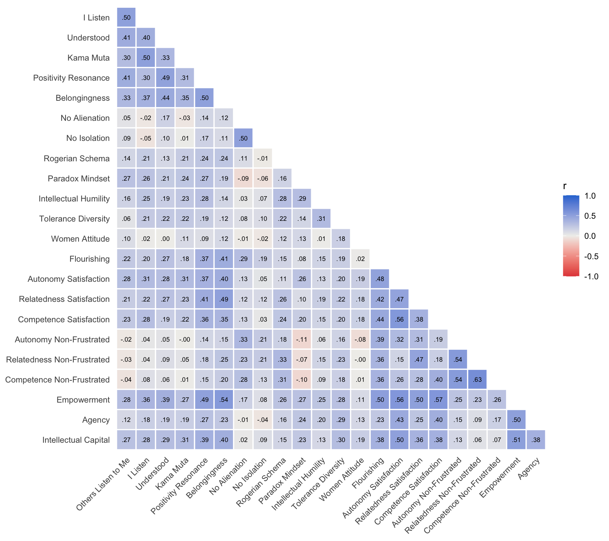
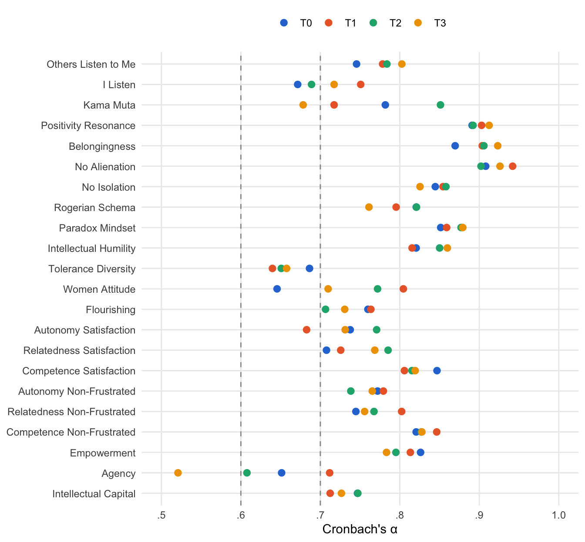

source("R/packages.R") # all packages (Chapter 1)
source("R/settings.R") # waves, conditions, folders (Chapter 1)
df <- readRDS("cache/df.rds") # one row per questionnaire (Chapter 2)
df_wide <- readRDS("cache/df_wide.rds") # one row per person (Chapter 2)
item_names <- names(select(df, ListenOther1:CompetenceNonFrustrated4))
source("R/scales.R") # the 23 scales (Chapter 2)5. Reliability and baseline correlations
NoteAbout this chapter
How consistently the items of each scale measure at each wave (Cronbach’s α, McDonald’s ω), and how each scale correlates with the other 22 in January (T0). Each of the 23 scales goes through the same four steps: its items, α and ω per wave, its correlations with the other scales, and what follows from them. The three hypothesis composites go through the same steps; five composites that cut across the blocks (need satisfaction and need non-frustration, the negatively and the positively worded items, all items) go through the first two. The chapter ends with all correlations side by side and a table across all scales and composites. Feeds the reliabilities of Table 1 and the description of the measures.
5.1 How each scale is examined
What happens to each scale? The same four steps, in the same order, for each of the 23 scales (Chapter 2). Nothing in this chapter changes a scale: each keeps the items of its score, with the reverse-keyed items turned and Women Attitude without its two items at the ceiling. The four steps fall into three parts: the reliability at each wave, the correlations in January, and what follows. The diagram shows the path; the list below describes each step.
flowchart TB
subgraph REL["reliability: all questionnaires of each wave"]
direction LR
S1["<b>Step 1</b><br>the items"] --> S2{{"<b>Step 2</b><br>α and ω per wave,<br>item checks"}}
end
subgraph COR["correlations: January"]
direction LR
S3["<b>Step 3</b><br>correlations with<br>the other scales"]
end
V["<b>Step 4</b><br>what follows"]
REL --> COR
COR --> V
classDef all fill:#efeff2,stroke:#8a8a8a,color:#1d1d1f
classDef verdict fill:#ffffff,stroke:#1d1d1f,color:#1d1d1f
class S1,S2,S3 all
class V verdict
style REL fill:#fafafa,stroke:#8a8a8a
style COR fill:#fafafa,stroke:#8a8a8a
The four steps in detail:
Reliability, at each wave:
- The items. Which questions make up the scale, in their wording, and which of them were asked the other way round (reverse-keyed) and turned for the analysis.
- α and ω per wave. How consistently the items measure, at each of the four waves, over all questionnaires of that wave. Cronbach’s α (
psych::alpha(), its raw α) needs at least two items; it rests on the covariances of the answers as given, each pair of items on the questionnaires that answer both, as in Table 1. McDonald’s ω (psych::omega()with one factor, its total ω) needs at least three items; it lets the items measure the scale to different degrees and rests on their correlations, where every item counts the same. Values of .70 and more count as acceptable, values below .60 as poor. Where ω lies more than .05 above α, the step also shows how widely each item spreads: an item that spreads far more widely than the others weighs more in α, but not in ω. Then the item analysis of the textbooks (Nunnally & Bernstein, 1994; Clark & Watson, 1995): the average correlation between the items, which Clark and Watson put between .15 and .50 for a scale that is neither too broad nor redundant; each item’s correlation with the sum of the other items (the corrected item-total correlation), which should reach .30; and α without each item, which rises by more than .01 only for an item that goes less with the scale than the others. The checks are reported; none of them changes a scale here.
Correlations, in January:
- Correlations with the other scales. How the score of the scale goes with the scores of the other 22 scales in January (T0), each pair on the questionnaires that answer both. A correlation is significant (p < .05, two-sided) from the critical |r| for the number of January questionnaires (5.2) on; it counts as moderate from .30, as strong from .50, and as small if it is significant but below .30. The sizes are judged on the unrounded r.
What follows:
- What follows. Where the scale goes in the later chapters: its α into Table 1, its score into the analyses of the training effects, and its items into the latent factors of Chapter 6.
And the composites? The three hypothesis composites (5.6) go through the same four steps. Their second step asks in addition whether every item goes with the pool, and what α becomes on the questionnaires that answer every item; their third asks how closely the scales of the block hang together, and how the composite goes with the other two. Five further composites that cut across the blocks (5.7) have no score: they go through the first two steps and what follows. The chapter closes with all correlations side by side (5.8) and a table across all scales and composites (5.9).
5.2 Data and tools
Which data? The questionnaires of each wave, one data set each, for Step 2; the January questionnaires for Step 3; and, for Step 4, the item sets on which Chapter 6 builds the latent factors:
list_df <- split(df, df$Occasion)
t0 <- filter(df, Occasion == "T0")
source("R/measurement.R") # the latent item sets (Chapter 6)From which size on is a correlation significant? From the |r| at which the t-test of a correlation reaches p = .05 (two-sided) for the number of January questionnaires:
# the smallest |r| with p < .05 (two-sided) among the January questionnaires
t_critical <- qt(.975, nrow(t0) - 2)
r_critical <- t_critical / sqrt(t_critical^2 + nrow(t0) - 2)With 358 January questionnaires, a correlation is significant from |r| = .104 on.
Which tools? The analysis of each step is written out for every scale. The tables and figures that recur, the item checks of Step 2 and the path at the head of each scale use small functions, defined once here; the wording of the items and the list of reverse-keyed items come from R/item_wording.R:
# The wording of every item (English version of the questionnaire), under
# the names of the analysis file (Chapter 2), and the reverse-keyed items
need <- \(numbers) paste0("needSatisfaction", numbers)
wording_names <- c(
"Alienation1" = "NoAlienation1", "Alienation2" = "NoAlienation2",
"Isolation1" = "NoIsolation1", "Isolation2" = "NoIsolation2",
set_names(paste0("AutonomySatisfaction", 1:4), need(c(1, 7, 13, 19))),
set_names(paste0("AutonomyNonFrustrated", 1:4), need(c(2, 8, 14, 20))),
set_names(paste0("RelatednessSatisfaction", 1:4), need(c(3, 9, 15, 21))),
set_names(paste0("RelatednessNonFrustrated", 1:4), need(c(4, 10, 16, 22))),
set_names(paste0("CompetenceSatisfaction", 1:4), need(c(5, 11, 17, 23))),
set_names(paste0("CompetenceNonFrustrated", 1:4), need(c(6, 12, 18, 24)))
)
item_wording <- read_csv("data/item_labels.csv", show_col_types = FALSE) |>
transmute(item = coalesce(wording_names[column_name], column_name),
text = str_squish(label_en))
# answered on the reverse scale and turned around in Chapter 2
reverse_keyed <- c(str_c("NoAlienation", 1:2), str_c("NoIsolation", 1:2),
"Flourishing5", "Flourishing6", str_c("Rogerian", 7:9),
"ToleranceDiversity1",
str_c(rep(c("Autonomy", "Relatedness", "Competence"),
each = 4), "NonFrustrated", rep(1:4, 3)))# the correlations of one score with the other scales, closest first, with
# the block of each scale and the size of the correlation
correlation_table <- \(correlations) {
correlations |>
left_join(scales, by = "scale") |>
mutate(size = case_when(abs(r) >= .50 ~ "strong",
abs(r) >= .30 ~ "moderate",
abs(r) >= r_critical ~ "small",
.default = "not significant")) |>
arrange(desc(abs(r))) |>
select(scale = label, block, r, size) |>
mutate(r = round(r, 2))
}# how many items of each scale a composite pools
items_by_scale <- \(items) {
tibble(scale = str_remove(items, "[0-9]+$")) |>
count(scale, name = "items") |>
left_join(scales, by = "scale") |>
arrange(match(scale, scales$scale)) |>
select(scale = label, block, items)
}# the correlations of the 23 scale scores as a lower triangle, in the order
# of the blocks: blue positive, red negative, grey near zero
plot_scale_correlations <- \(r) {
scale_labels <- set_names(scales$label, scales$scale)
r[upper.tri(r, diag = TRUE)] <- NA
as_tibble(r, rownames = "row") |>
pivot_longer(-row, names_to = "column", values_to = "r") |>
filter(!is.na(r)) |>
mutate(row = factor(scale_labels[row], levels = rev(scales$label)),
column = factor(scale_labels[column], levels = scales$label)) |>
ggplot(aes(column, row, fill = r)) +
geom_tile(colour = "white", linewidth = .6) +
geom_text(aes(label = apa(r)), size = 2.4) +
scale_fill_gradient2(low = "#e34948", mid = "#f0efec", high = "#2a78d6",
limits = c(-1, 1)) +
labs(x = NULL, y = NULL, fill = "r") +
theme_minimal(base_size = 11) +
theme(panel.grid = element_blank(),
axis.text.x = element_text(angle = 45, hjust = 1))
}# the items of each score: Women Attitude without its two items at the
# ceiling (Chapter 2)
scored_items <- map(scale_items, \(items) setdiff(items, ceiling_items))
# the item analysis of the textbooks at one wave (Nunnally & Bernstein,
# 1994; Clark & Watson, 1995): for every item its correlation with the sum
# of the other items (corrected item-total correlation) and the change in
# α without it, beside the average correlation between the items
item_analysis <- \(answers) {
fit <- psych::alpha(answers, warnings = FALSE)
tibble(item = str_c("item ", str_extract(names(answers), "[0-9]+$")),
average_r = fit$total$average_r,
r_rest = fit$item.stats$r.drop,
change = if (ncol(answers) > 2) {
fit$alpha.drop$raw_alpha - fit$total$raw_alpha
} else NA_real_)
}
# a signed change in α, as "+.016"
signed <- \(x) str_c(if_else(x < 0, "−", "+"), apa(abs(x), 3))
# one row per wave: the average correlation between the items, the weakest
# item with its correlation with the rest, how many items lie below .30,
# and the item without which α would change most upwards
item_table <- \(analysis) {
analysis |>
summarise(average_r = apa(first(average_r)),
weakest = str_c(item[which.min(r_rest)], ": ",
apa(min(r_rest))),
below_30 = sum(r_rest < .30),
without = if (all(is.na(change))) "–" else {
str_c(item[which.max(change)], ": ", signed(max(change)))
},
.by = wave)
}
# the waves at which something holds, as "T0 and T2"
waves_where <- \(wave, holds) str_flatten_comma(unique(wave[holds]),
last = " and ")
# what the item checks say, in three sentences
item_sentence <- \(analysis) {
r <- distinct(analysis, wave, average_r)
average <- str_c("On average the items correlate at ", apa(min(r$average_r)),
" to ", apa(max(r$average_r)))
average <- if (all(between(r$average_r, .15, .50))) {
str_c(average, ", within the .15 to .50 that Clark and Watson (1995) ",
"recommend.")
} else if (all(r$average_r > .50)) {
str_c(average, ", above the .50 from which Clark and Watson (1995) ",
"see items come close to saying the same.")
} else {
str_c(average, c(
if (any(r$average_r > .50)) {
str_c(", above .50 at ", waves_where(r$wave, r$average_r > .50))
},
if (any(r$average_r < .15)) {
str_c(", below .15 at ", waves_where(r$wave, r$average_r < .15))
}) |> str_flatten(), " (Clark and Watson, 1995, recommend .15 to .50).")
}
weak <- analysis |>
filter(r_rest < .30) |>
summarise(text = str_c(first(item), " (", waves_where(wave, TRUE),
", down to ", apa(min(r_rest)), ")"),
.by = item)
rest <- if (nrow(weak) == 0) {
str_c("Every item correlates at least .30 with the rest of the scale, ",
"at every wave (lowest ", apa(min(analysis$r_rest)), ").")
} else {
str_c(str_flatten_comma(weak$text, last = " and "),
if (nrow(weak) == 1) " correlates" else " correlate",
" less than .30 with the rest of the scale.") |>
str_replace("^item", "Item")
}
rising <- analysis |> filter(change > .01)
without <- if (all(is.na(analysis$change))) {
"With two items, neither can be left out."
} else if (nrow(rising) == 0) {
"Without any one item, α would rise by .01 or less at every wave."
} else {
str_c("Without ", str_flatten_comma(unique(rising$item), last = " or "),
", α would rise by up to ", apa(max(rising$change), 3), " (at ",
waves_where(rising$wave, TRUE), "): ",
if (n_distinct(rising$item) == 1) "this item goes" else
"these items go",
" less with the scale than the others.")
}
str_c(average, " ", rest, " ", without)
}# α and ω of a set of items at each wave, as in Step 2
reliability_by_wave <- \(items) {
list_df |>
map(\(wave) {
answers <- select(wave, all_of(items))
tibble(alpha = if (length(items) > 1) {
psych::alpha(answers, warnings = FALSE)$total$raw_alpha
} else NA_real_,
omega = if (length(items) > 2) {
psych::omega(answers, nfactors = 1, plot = FALSE)$omega.tot
} else NA_real_)
}) |>
list_rbind(names_to = "wave")
}
# α and ω in words, judged on the unrounded values (5.1)
reliability_text <- \(reliability) {
a <- reliability$alpha
text <- str_c("α ", apa(min(a)), " to ", apa(max(a)))
text <- if (all(a >= .70)) str_c(text, ", acceptable at every wave") else {
str_c(text, ", below .70 at ", waves_where(reliability$wave, a < .70),
if (any(a < .60)) {
str_c(" (poor at ", waves_where(reliability$wave, a < .60), ")")
})
}
omega <- reliability$omega
if (all(is.na(omega))) return(text)
gap <- omega - a
str_c(text, "; ω ", apa(min(omega)), " to ", apa(max(omega)),
if (any(gap > .05)) {
str_c(", more than .05 above α at ",
waves_where(reliability$wave, gap > .05))
})
}
# the item checks in words, for the path
item_text <- \(analysis) {
weak <- unique(analysis$item[analysis$r_rest < .30])
rising <- unique(analysis$item[!is.na(analysis$change) &
analysis$change > .01])
c(if (length(weak) == 0) "every item .30 or more with the rest" else {
str_c(str_flatten_comma(weak, last = " and "),
" below .30 with the rest")
},
if (length(rising) > 0) {
str_c("without ", str_flatten_comma(rising, last = " or "),
" α would rise by more than .01")
}) |>
str_flatten("; ")
}
# the path of a scale through the four steps, from the computations of the
# steps themselves
scale_path <- \(scale) {
items <- scored_items[[scale]]
labels <- set_names(scales$label, scales$scale)
r <- t0 |>
select(all_of(scales$scale)) |>
cor(use = "pairwise.complete.obs")
others <- r[scale, setdiff(colnames(r), scale)]
closest <- names(which.max(abs(others)))
checks <- if (length(items) > 1) {
list_df |>
map(\(wave) item_analysis(select(wave, all_of(items)))) |>
list_rbind(names_to = "wave") |>
item_text()
} else "one item: nothing to check"
tribble(
~Step, ~Question, ~Result, ~Next,
"2", "How consistently do the items measure at each wave?",
if (length(items) == 1) "one item: no α within a wave" else {
reliability_text(reliability_by_wave(items))
}, "item checks",
"2", "Do the items pass the item checks?", checks, "correlations",
"3", "Which scale goes with it most closely in January?",
str_c(labels[closest], " (r = ", apa(others[closest]), ")"),
"what follows",
"4", "Where next?",
str_c("Table 1; an outcome of Chapters 9, 10 and 14",
if (scale %in% names(model_items)) "; a latent factor (Chapter 6)"),
"")
}
# the path of a composite: Step 2 computed, Steps 3 and 4 in words
composite_path <- \(items, step3, step4) {
tribble(
~Step, ~Question, ~Result, ~Next,
"2", "How consistently do the pooled items measure at each wave?",
reliability_text(reliability_by_wave(items)), "its scales",
"3", step3[1], step3[2], "what follows",
"4", "Where next?", step4, "")
}# α of each scale at each wave, with dashed lines at .60 and .70
wave_colours <- c(T0 = "#2a78d6", T1 = "#eb6834", T2 = "#1baf7a",
T3 = "#eda100")
plot_reliability <- \(reliability) {
reliability |>
filter(!is.na(alpha)) |>
left_join(scales, by = "scale") |>
mutate(label = factor(label, levels = rev(scales$label))) |>
ggplot(aes(alpha, label, colour = wave)) +
geom_vline(xintercept = c(.60, .70), linetype = "dashed",
colour = "grey60") +
geom_point(size = 2.4) +
scale_colour_manual(values = wave_colours) +
scale_x_continuous(limits = c(.5, 1), breaks = seq(.5, 1, .1),
labels = \(x) apa(x, 1)) +
labs(x = "Cronbach's α", y = NULL, colour = NULL) +
theme_minimal(base_size = 11) +
theme(panel.grid.minor = element_blank(), legend.position = "top")
}5.3 Listening and togetherness (H1)
Which scales? The eight scales of the first hypothesis. Seven of them have two or more items; Understood has a single item and no reliability within a wave. No Alienation and No Isolation consist only of reverse-keyed items.
Others Listen to Me
Its path through the steps. One row per step below, from the same computations as the steps; Steps 1 and 2 use all questionnaires of each wave all questionnaires, Step 3 the January questionnaires January:
| Step | Question | Result | Next |
|---|---|---|---|
| 2 | How consistently do the items measure at each wave? | α .75 to .80, acceptable at every wave | item checks |
| 2 | Do the items pass the item checks? | every item .30 or more with the rest | correlations |
| 3 | Which scale goes with it most closely in January? | I Listen (r = .50) | what follows |
| 4 | Where next? | Table 1; an outcome of Chapters 9, 10 and 14; a latent factor (Chapter 6) |
Reliability · Steps 1 and 2
Step 1 · The items all questionnaires
Which items measure it?
item_wording |>
filter(item %in% scale_items$ListenOther) |>
mutate(reversed = item %in% reverse_keyed)| item | text | reversed |
|---|---|---|
| ListenOther1 | When people listen to me, They totally devote themselves to exploring my thoughts with me. | FALSE |
| ListenOther2 | When people listen to me, they put aside their thoughts and concerns completely. | FALSE |
Two items, both asking how fully others attend when the respondent speaks; neither is reverse-keyed.
Next → Step 2, α and ω per wave: How consistently do the two items measure at each wave?
Step 2 · α and ω per wave all questionnaires
How consistently do the two items measure at each wave?
lo_reliability <- list_df |>
map(\(wave) {
items <- select(wave, num_range("ListenOther", 1:2))
tibble(k = ncol(items),
alpha = psych::alpha(items, warnings = FALSE)$total$raw_alpha)
}) |>
list_rbind(names_to = "wave")
lo_reliability |>
mutate(across(where(is.double), \(x) round(x, 2)))| wave | k | alpha |
|---|---|---|
| T0 | 2 | 0.75 |
| T1 | 2 | 0.78 |
| T2 | 2 | 0.78 |
| T3 | 2 | 0.80 |
α lies between .75 and .80 and rises a little from wave to wave. With two items there is no ω (5.1).
Do the items pass the textbook checks? At each wave, the average correlation between the items, the weakest item with its correlation with the rest of the scale, the number of items below .30, and the item without which α would rise most:
lo_item_analysis <- list_df |>
map(\(wave) wave |>
select(all_of(scored_items$ListenOther)) |>
item_analysis()) |>
list_rbind(names_to = "wave")
item_table(lo_item_analysis)| wave | average_r | weakest | below_30 | without |
|---|---|---|---|---|
| T0 | .61 | item 1: .60 | 0 | – |
| T1 | .64 | item 1: .64 | 0 | – |
| T2 | .65 | item 2: .65 | 0 | – |
| T3 | .69 | item 2: .69 | 0 | – |
On average the items correlate at .61 to .69, above the .50 from which Clark and Watson (1995) see items come close to saying the same. Every item correlates at least .30 with the rest of the scale, at every wave (lowest .60). With two items, neither can be left out.
Next → Step 3, correlations with the other scales: How does its score go with the other scales in January?
Correlations · Step 3
Step 3 · Correlations with the other scales January
How does its score go with the other scales in January?
lo_r <- t0 |>
select(all_of(scales$scale)) |>
cor(use = "pairwise.complete.obs") |>
as_tibble(rownames = "scale") |>
select(scale, r = ListenOther) |>
filter(scale != "ListenOther")
correlation_table(lo_r)| scale | block | r | size |
|---|---|---|---|
| I Listen | H1 | 0.50 | strong |
| Understood | H1 | 0.41 | moderate |
| Positivity Resonance | H1 | 0.41 | moderate |
| Belongingness | H1 | 0.33 | moderate |
| Kama Muta | H1 | 0.30 | moderate |
| Empowerment | H3 | 0.28 | small |
| Autonomy Satisfaction | H3 | 0.28 | small |
| Intellectual Capital | H3 | 0.27 | small |
| Paradox Mindset | H2 | 0.27 | small |
| Competence Satisfaction | H3 | 0.23 | small |
| Flourishing | H3 | 0.22 | small |
| Relatedness Satisfaction | H3 | 0.21 | small |
| Intellectual Humility | H2 | 0.16 | small |
| Rogerian Schema | H2 | 0.14 | small |
| Agency | H3 | 0.12 | small |
| Women Attitude | H2 | 0.10 | not significant |
| No Isolation | H1 | 0.09 | not significant |
| Tolerance Diversity | H2 | 0.06 | not significant |
| No Alienation | H1 | 0.05 | not significant |
| Competence Non-Frustrated | H3 | -0.04 | not significant |
| Relatedness Non-Frustrated | H3 | -0.03 | not significant |
| Autonomy Non-Frustrated | H3 | -0.02 | not significant |
It correlates significantly with 15 of the 22 other scales and strongly only with I Listen (r = .50), its counterpart about the respondent’s own listening. None of the five scales made only of reverse-keyed items correlates with it significantly.
Next → Step 4, what follows: Where does the scale go from here?
What follows · Step 4
Step 4 · What follows
Where does the scale go from here? Its α of each wave feeds Table 1. Its score, the mean of both items (Chapter 2), is an outcome of Chapters 9, 10 and 14 and an indicator of the latent H1 block in Chapter 12; its items enter the composite of H1 (5.6). Chapter 6 builds its latent factor, which Chapters 7, 8 and 11 use, on both items.
I Listen
Its path through the steps. One row per step below, from the same computations as the steps; Steps 1 and 2 use all questionnaires of each wave all questionnaires, Step 3 the January questionnaires January:
| Step | Question | Result | Next |
|---|---|---|---|
| 2 | How consistently do the items measure at each wave? | α .67 to .75, below .70 at T0 and T2 | item checks |
| 2 | Do the items pass the item checks? | every item .30 or more with the rest | correlations |
| 3 | Which scale goes with it most closely in January? | Others Listen to Me (r = .50) | what follows |
| 4 | Where next? | Table 1; an outcome of Chapters 9, 10 and 14; a latent factor (Chapter 6) |
Reliability · Steps 1 and 2
Step 1 · The items all questionnaires
Which items measure it?
item_wording |>
filter(item %in% scale_items$ListenSelf) |>
mutate(reversed = item %in% reverse_keyed)| item | text | reversed |
|---|---|---|
| ListenSelf1 | When I listen to a person talking to me, I totally devote myself to exploring their thoughts with them. | FALSE |
| ListenSelf2 | When I listen to a person talking to me, I put aside my thoughts and concerns completely. | FALSE |
Two items on how the respondent listens: devoting oneself to the speaker’s thoughts, and putting one’s own aside. They mirror the two items of Others Listen to Me; neither is reverse-keyed.
Next → Step 2, α and ω per wave: How consistently do the two items measure at each wave?
Step 2 · α and ω per wave all questionnaires
How consistently do the two items measure at each wave?
ls_reliability <- list_df |>
map(\(wave) {
items <- select(wave, num_range("ListenSelf", 1:2))
tibble(k = ncol(items),
alpha = psych::alpha(items, warnings = FALSE)$total$raw_alpha)
}) |>
list_rbind(names_to = "wave")
ls_reliability |>
mutate(across(where(is.double), \(x) round(x, 2)))| wave | k | alpha |
|---|---|---|
| T0 | 2 | 0.67 |
| T1 | 2 | 0.75 |
| T2 | 2 | 0.69 |
| T3 | 2 | 0.72 |
α falls just short of .70 in January (.67) and at T2 (.69) and lies above it at T1 and T3. With two items there is no ω (5.1).
Do the items pass the textbook checks? At each wave, the average correlation between the items, the weakest item with its correlation with the rest of the scale, the number of items below .30, and the item without which α would rise most:
ls_item_analysis <- list_df |>
map(\(wave) wave |>
select(all_of(scored_items$ListenSelf)) |>
item_analysis()) |>
list_rbind(names_to = "wave")
item_table(ls_item_analysis)| wave | average_r | weakest | below_30 | without |
|---|---|---|---|---|
| T0 | .53 | item 2: .53 | 0 | – |
| T1 | .62 | item 1: .62 | 0 | – |
| T2 | .58 | item 2: .58 | 0 | – |
| T3 | .60 | item 2: .60 | 0 | – |
On average the items correlate at .53 to .62, above the .50 from which Clark and Watson (1995) see items come close to saying the same. Every item correlates at least .30 with the rest of the scale, at every wave (lowest .53). With two items, neither can be left out.
Next → Step 3, correlations with the other scales: How does its score go with the other scales in January?
Correlations · Step 3
Step 3 · Correlations with the other scales January
How does its score go with the other scales in January?
ls_r <- t0 |>
select(all_of(scales$scale)) |>
cor(use = "pairwise.complete.obs") |>
as_tibble(rownames = "scale") |>
select(scale, r = ListenSelf) |>
filter(scale != "ListenSelf")
correlation_table(ls_r)| scale | block | r | size |
|---|---|---|---|
| Others Listen to Me | H1 | 0.50 | strong |
| Kama Muta | H1 | 0.50 | strong |
| Understood | H1 | 0.40 | moderate |
| Belongingness | H1 | 0.37 | moderate |
| Empowerment | H3 | 0.36 | moderate |
| Autonomy Satisfaction | H3 | 0.31 | moderate |
| Positivity Resonance | H1 | 0.30 | small |
| Competence Satisfaction | H3 | 0.28 | small |
| Intellectual Capital | H3 | 0.28 | small |
| Paradox Mindset | H2 | 0.26 | small |
| Intellectual Humility | H2 | 0.25 | small |
| Relatedness Satisfaction | H3 | 0.22 | small |
| Tolerance Diversity | H2 | 0.21 | small |
| Rogerian Schema | H2 | 0.21 | small |
| Flourishing | H3 | 0.20 | small |
| Agency | H3 | 0.18 | small |
| Competence Non-Frustrated | H3 | 0.08 | not significant |
| No Isolation | H1 | -0.05 | not significant |
| Relatedness Non-Frustrated | H3 | 0.04 | not significant |
| Autonomy Non-Frustrated | H3 | 0.04 | not significant |
| No Alienation | H1 | -0.02 | not significant |
| Women Attitude | H2 | 0.02 | not significant |
It correlates significantly with 16 of the 22 other scales and strongly with two of its own block, Others Listen to Me and Kama Muta (both r = .50). As for Others Listen to Me, none of the five scales made only of reverse-keyed items correlates with it significantly.
Next → Step 4, what follows: Where does the scale go from here?
What follows · Step 4
Step 4 · What follows
Where does the scale go from here? Its α of each wave feeds Table 1. Its score, the mean of both items (Chapter 2), is an outcome of Chapters 9, 10 and 14 and an indicator of the latent H1 block in Chapter 12; its items enter the composite of H1 (5.6). Chapter 6 builds its latent factor on both items.
Understood
Its path through the steps. One row per step below, from the same computations as the steps; Steps 1 and 2 use all questionnaires of each wave all questionnaires, Step 3 the January questionnaires January:
| Step | Question | Result | Next |
|---|---|---|---|
| 2 | How consistently do the items measure at each wave? | one item: no α within a wave | item checks |
| 2 | Do the items pass the item checks? | one item: nothing to check | correlations |
| 3 | Which scale goes with it most closely in January? | Positivity Resonance (r = .49) | what follows |
| 4 | Where next? | Table 1; an outcome of Chapters 9, 10 and 14 |
Reliability · Steps 1 and 2
Step 1 · The item all questionnaires
Which item measures it? A single one:
item_wording |>
filter(item %in% scale_items$Understood) |>
mutate(reversed = item %in% reverse_keyed)| item | text | reversed |
|---|---|---|
| Understood1 | During my interactions with others, I feel they understand me. | FALSE |
It asks whether others understand the respondent; it is not reverse-keyed.
Next → Step 2, α and ω per wave: Is there a reliability to estimate?
Step 2 · α and ω per wave all questionnaires
Is there a reliability to estimate? No. α needs at least two items and ω three; a single item has no other item to agree with within a wave. The tables of this chapter keep only its number of items:
# one item: no α and no ω
und_reliability <- tibble(wave = names(list_df), k = 1L)Next → Step 3, correlations with the other scales: How does its score go with the other scales in January?
Correlations · Step 3
Step 3 · Correlations with the other scales January
How does its score go with the other scales in January?
und_r <- t0 |>
select(all_of(scales$scale)) |>
cor(use = "pairwise.complete.obs") |>
as_tibble(rownames = "scale") |>
select(scale, r = Understood) |>
filter(scale != "Understood")
correlation_table(und_r)| scale | block | r | size |
|---|---|---|---|
| Positivity Resonance | H1 | 0.49 | moderate |
| Belongingness | H1 | 0.44 | moderate |
| Others Listen to Me | H1 | 0.41 | moderate |
| I Listen | H1 | 0.40 | moderate |
| Empowerment | H3 | 0.39 | moderate |
| Kama Muta | H1 | 0.33 | moderate |
| Intellectual Capital | H3 | 0.29 | small |
| Autonomy Satisfaction | H3 | 0.28 | small |
| Relatedness Satisfaction | H3 | 0.27 | small |
| Flourishing | H3 | 0.27 | small |
| Tolerance Diversity | H2 | 0.22 | small |
| Paradox Mindset | H2 | 0.21 | small |
| Intellectual Humility | H2 | 0.19 | small |
| Competence Satisfaction | H3 | 0.19 | small |
| Agency | H3 | 0.19 | small |
| No Alienation | H1 | 0.17 | small |
| Rogerian Schema | H2 | 0.13 | small |
| No Isolation | H1 | 0.10 | not significant |
| Relatedness Non-Frustrated | H3 | 0.09 | not significant |
| Competence Non-Frustrated | H3 | 0.06 | not significant |
| Autonomy Non-Frustrated | H3 | 0.05 | not significant |
| Women Attitude | H2 | 0.00 | not significant |
It correlates significantly with 17 of the 22 other scales, moderately with 6 and strongly with none; the closest is Positivity Resonance (r = .49), the shared experience of connection. Of the five scales made only of reverse-keyed items, only No Alienation correlates with it significantly.
Next → Step 4, what follows: Where does it go from here?
What follows · Step 4
Step 4 · What follows
Where does it go from here? Understood stays a manifest score: its item is its score (Chapter 2), an outcome of Chapters 9, 10 and 14 and an indicator of the latent H1 block in Chapter 12, and the item enters the composite of H1 (5.6). Table 1 has no α for it. In the block model of Chapter 8 it enters as a factor carried by its single item without measurement error; Chapters 7 and 11 leave it out (Chapter 6).
Kama Muta
Its path through the steps. One row per step below, from the same computations as the steps; Steps 1 and 2 use all questionnaires of each wave all questionnaires, Step 3 the January questionnaires January:
| Step | Question | Result | Next |
|---|---|---|---|
| 2 | How consistently do the items measure at each wave? | α .68 to .85, below .70 at T3 | item checks |
| 2 | Do the items pass the item checks? | every item .30 or more with the rest | correlations |
| 3 | Which scale goes with it most closely in January? | I Listen (r = .50) | what follows |
| 4 | Where next? | Table 1; an outcome of Chapters 9, 10 and 14; a latent factor (Chapter 6) |
Reliability · Steps 1 and 2
Step 1 · The items all questionnaires
Which items measure it?
item_wording |>
filter(item %in% scale_items$KamaMuta) |>
mutate(reversed = item %in% reverse_keyed)| item | text | reversed |
|---|---|---|
| KamaMuta1 | I tend to feel moved | FALSE |
| KamaMuta2 | I tend to feel touched | FALSE |
Two short items on being moved and being touched; neither is reverse-keyed.
Next → Step 2, α and ω per wave: How consistently do the two items measure at each wave?
Step 2 · α and ω per wave all questionnaires
How consistently do the two items measure at each wave?
km_reliability <- list_df |>
map(\(wave) {
items <- select(wave, num_range("KamaMuta", 1:2))
tibble(k = ncol(items),
alpha = psych::alpha(items, warnings = FALSE)$total$raw_alpha)
}) |>
list_rbind(names_to = "wave")
km_reliability |>
mutate(across(where(is.double), \(x) round(x, 2)))| wave | k | alpha |
|---|---|---|
| T0 | 2 | 0.78 |
| T1 | 2 | 0.72 |
| T2 | 2 | 0.85 |
| T3 | 2 | 0.68 |
α moves from wave to wave, between .68 at T3, its only value below .70, and .85 at T2. With two items there is no ω (5.1).
Do the items pass the textbook checks? At each wave, the average correlation between the items, the weakest item with its correlation with the rest of the scale, the number of items below .30, and the item without which α would rise most:
km_item_analysis <- list_df |>
map(\(wave) wave |>
select(all_of(scored_items$KamaMuta)) |>
item_analysis()) |>
list_rbind(names_to = "wave")
item_table(km_item_analysis)| wave | average_r | weakest | below_30 | without |
|---|---|---|---|---|
| T0 | .64 | item 1: .64 | 0 | – |
| T1 | .56 | item 1: .56 | 0 | – |
| T2 | .75 | item 1: .74 | 0 | – |
| T3 | .52 | item 1: .52 | 0 | – |
On average the items correlate at .52 to .75, above the .50 from which Clark and Watson (1995) see items come close to saying the same. Every item correlates at least .30 with the rest of the scale, at every wave (lowest .52). With two items, neither can be left out.
Next → Step 3, correlations with the other scales: How does its score go with the other scales in January?
Correlations · Step 3
Step 3 · Correlations with the other scales January
How does its score go with the other scales in January?
km_r <- t0 |>
select(all_of(scales$scale)) |>
cor(use = "pairwise.complete.obs") |>
as_tibble(rownames = "scale") |>
select(scale, r = KamaMuta) |>
filter(scale != "KamaMuta")
correlation_table(km_r)| scale | block | r | size |
|---|---|---|---|
| I Listen | H1 | 0.50 | strong |
| Belongingness | H1 | 0.35 | moderate |
| Understood | H1 | 0.33 | moderate |
| Positivity Resonance | H1 | 0.31 | moderate |
| Intellectual Capital | H3 | 0.31 | moderate |
| Autonomy Satisfaction | H3 | 0.31 | moderate |
| Others Listen to Me | H1 | 0.30 | moderate |
| Empowerment | H3 | 0.27 | small |
| Paradox Mindset | H2 | 0.24 | small |
| Intellectual Humility | H2 | 0.23 | small |
| Relatedness Satisfaction | H3 | 0.23 | small |
| Tolerance Diversity | H2 | 0.22 | small |
| Competence Satisfaction | H3 | 0.22 | small |
| Rogerian Schema | H2 | 0.21 | small |
| Agency | H3 | 0.19 | small |
| Flourishing | H3 | 0.18 | small |
| Women Attitude | H2 | 0.11 | small |
| Relatedness Non-Frustrated | H3 | 0.05 | not significant |
| No Alienation | H1 | -0.03 | not significant |
| No Isolation | H1 | 0.01 | not significant |
| Competence Non-Frustrated | H3 | 0.01 | not significant |
| Autonomy Non-Frustrated | H3 | 0.00 | not significant |
It correlates significantly with 17 of the 22 other scales, strongly only with I Listen (r = .50). The five scales without a significant correlation are exactly the five made only of reverse-keyed items.
Next → Step 4, what follows: Where does the scale go from here?
What follows · Step 4
Step 4 · What follows
Where does the scale go from here? Its α of each wave feeds Table 1. Its score, the mean of both items (Chapter 2), is an outcome of Chapters 9, 10 and 14 and an indicator of the latent H1 block in Chapter 12; its items enter the composite of H1 (5.6). Chapter 6 builds its latent factor on both items.
Positivity Resonance
Its path through the steps. One row per step below, from the same computations as the steps; Steps 1 and 2 use all questionnaires of each wave all questionnaires, Step 3 the January questionnaires January:
| Step | Question | Result | Next |
|---|---|---|---|
| 2 | How consistently do the items measure at each wave? | α .89 to .91, acceptable at every wave; ω .89 to .91 | item checks |
| 2 | Do the items pass the item checks? | every item .30 or more with the rest | correlations |
| 3 | Which scale goes with it most closely in January? | Belongingness (r = .50) | what follows |
| 4 | Where next? | Table 1; an outcome of Chapters 9, 10 and 14; a latent factor (Chapter 6) |
Reliability · Steps 1 and 2
Step 1 · The items all questionnaires
Which items measure it? Eight items that complete one question stem about how often the respondent experiences moments of positive connection; none is reverse-keyed:
item_wording |>
filter(item %in% scale_items$Resonance) |>
mutate(reversed = item %in% reverse_keyed)| item | text | reversed |
|---|---|---|
| Resonance1 | are able to attune to other people’s words and experiences? | FALSE |
| Resonance2 | experience a ‘flow of conversation’ with other people? | FALSE |
| Resonance3 | feel energized? | FALSE |
| Resonance4 | you and other people share a mutual understanding of one another? | FALSE |
| Resonance5 | you and other people are mutually responsive to one another’s needs? | FALSE |
| Resonance6 | you feel a sense of mutual trust with other people? | FALSE |
| Resonance7 | you and other people mutually focus on the ‘best side’ of one another? | FALSE |
| Resonance8 | you feel ‘in sync’ with other people? | FALSE |
Next → Step 2, α and ω per wave: How consistently do the items measure at each wave?
Step 2 · α and ω per wave all questionnaires
How consistently do the items measure at each wave?
res_reliability <- list_df |>
map(\(wave) {
items <- select(wave, num_range("Resonance", 1:8))
tibble(k = ncol(items),
alpha = psych::alpha(items, warnings = FALSE)$total$raw_alpha,
omega = psych::omega(items, nfactors = 1,
plot = FALSE)$omega.tot)
}) |>
list_rbind(names_to = "wave")
res_reliability |>
mutate(across(where(is.double), \(x) round(x, 2)))| wave | k | alpha | omega |
|---|---|---|---|
| T0 | 8 | 0.89 | 0.89 |
| T1 | 8 | 0.90 | 0.91 |
| T2 | 8 | 0.89 | 0.89 |
| T3 | 8 | 0.91 | 0.91 |
α and ω lie at about .90 at every wave, from .89 to .91, and differ by at most .002: the eight items measure the scale about equally well.
Do the items pass the textbook checks? At each wave, the average correlation between the items, the weakest item with its correlation with the rest of the scale, the number of items below .30, and the item without which α would rise most:
res_item_analysis <- list_df |>
map(\(wave) wave |>
select(all_of(scored_items$Resonance)) |>
item_analysis()) |>
list_rbind(names_to = "wave")
item_table(res_item_analysis)| wave | average_r | weakest | below_30 | without |
|---|---|---|---|---|
| T0 | .51 | item 1: .54 | 0 | item 1: −.002 |
| T1 | .54 | item 1: .56 | 0 | item 1: −.001 |
| T2 | .50 | item 1: .44 | 0 | item 1: +.006 |
| T3 | .56 | item 1: .57 | 0 | item 1: −.000 |
On average the items correlate at .50 to .56, above the .50 from which Clark and Watson (1995) see items come close to saying the same. Every item correlates at least .30 with the rest of the scale, at every wave (lowest .44). Without any one item, α would rise by .01 or less at every wave.
Next → Step 3, correlations with the other scales: How does its score go with the other scales in January?
Correlations · Step 3
Step 3 · Correlations with the other scales January
How does its score go with the other scales in January?
res_r <- t0 |>
select(all_of(scales$scale)) |>
cor(use = "pairwise.complete.obs") |>
as_tibble(rownames = "scale") |>
select(scale, r = Resonance) |>
filter(scale != "Resonance")
correlation_table(res_r)| scale | block | r | size |
|---|---|---|---|
| Belongingness | H1 | 0.50 | strong |
| Empowerment | H3 | 0.49 | moderate |
| Understood | H1 | 0.49 | moderate |
| Relatedness Satisfaction | H3 | 0.41 | moderate |
| Others Listen to Me | H1 | 0.41 | moderate |
| Intellectual Capital | H3 | 0.39 | moderate |
| Autonomy Satisfaction | H3 | 0.37 | moderate |
| Flourishing | H3 | 0.37 | moderate |
| Competence Satisfaction | H3 | 0.36 | moderate |
| Kama Muta | H1 | 0.31 | moderate |
| I Listen | H1 | 0.30 | small |
| Intellectual Humility | H2 | 0.28 | small |
| Agency | H3 | 0.27 | small |
| Paradox Mindset | H2 | 0.27 | small |
| Rogerian Schema | H2 | 0.24 | small |
| Tolerance Diversity | H2 | 0.19 | small |
| Relatedness Non-Frustrated | H3 | 0.18 | small |
| No Isolation | H1 | 0.17 | small |
| Competence Non-Frustrated | H3 | 0.15 | small |
| No Alienation | H1 | 0.14 | small |
| Autonomy Non-Frustrated | H3 | 0.14 | small |
| Women Attitude | H2 | 0.09 | not significant |
It correlates significantly with every other scale except Women Attitude, strongly with Belongingness (r = .50) and almost as strongly with Empowerment of H3 (r = .49).
Next → Step 4, what follows: Where does the scale go from here?
What follows · Step 4
Step 4 · What follows
Where does the scale go from here? Its α of each wave feeds Table 1. Its score, the mean of all eight items (Chapter 2), is an outcome of Chapters 9, 10 and 14 and an indicator of the latent H1 block in Chapter 12; its items enter the composite of H1 (5.6). Chapter 6 builds its latent factor on all eight items, with residual covariances for two pairs of items that share their wording.
Belongingness
Its path through the steps. One row per step below, from the same computations as the steps; Steps 1 and 2 use all questionnaires of each wave all questionnaires, Step 3 the January questionnaires January:
| Step | Question | Result | Next |
|---|---|---|---|
| 2 | How consistently do the items measure at each wave? | α .87 to .92, acceptable at every wave; ω .87 to .93 | item checks |
| 2 | Do the items pass the item checks? | every item .30 or more with the rest; without item 1 α would rise by more than .01 | correlations |
| 3 | Which scale goes with it most closely in January? | Empowerment (r = .54) | what follows |
| 4 | Where next? | Table 1; an outcome of Chapters 9, 10 and 14; a latent factor (Chapter 6) |
Reliability · Steps 1 and 2
Step 1 · The items all questionnaires
Which items measure it?
item_wording |>
filter(item %in% scale_items$Belongingness) |>
mutate(reversed = item %in% reverse_keyed)| item | text | reversed |
|---|---|---|
| Belongingness1 | I have a sense of belonging. | FALSE |
| Belongingness2 | I feel accepted by others. | FALSE |
| Belongingness3 | I feel connected with others. | FALSE |
Three short items on belonging, being accepted and being connected; none is reverse-keyed.
Next → Step 2, α and ω per wave: How consistently do the items measure at each wave?
Step 2 · α and ω per wave all questionnaires
How consistently do the items measure at each wave?
bel_reliability <- list_df |>
map(\(wave) {
items <- select(wave, num_range("Belongingness", 1:3))
tibble(k = ncol(items),
alpha = psych::alpha(items, warnings = FALSE)$total$raw_alpha,
omega = psych::omega(items, nfactors = 1,
plot = FALSE)$omega.tot)
}) |>
list_rbind(names_to = "wave")
bel_reliability |>
mutate(across(where(is.double), \(x) round(x, 2)))| wave | k | alpha | omega |
|---|---|---|---|
| T0 | 3 | 0.87 | 0.87 |
| T1 | 3 | 0.90 | 0.91 |
| T2 | 3 | 0.91 | 0.91 |
| T3 | 3 | 0.92 | 0.93 |
α rises from .87 in January to .92 in December, and ω follows it within .01.
Do the items pass the textbook checks? At each wave, the average correlation between the items, the weakest item with its correlation with the rest of the scale, the number of items below .30, and the item without which α would rise most:
bel_item_analysis <- list_df |>
map(\(wave) wave |>
select(all_of(scored_items$Belongingness)) |>
item_analysis()) |>
list_rbind(names_to = "wave")
item_table(bel_item_analysis)| wave | average_r | weakest | below_30 | without |
|---|---|---|---|---|
| T0 | .70 | item 1: .72 | 0 | item 1: −.020 |
| T1 | .76 | item 1: .77 | 0 | item 1: −.006 |
| T2 | .77 | item 3: .80 | 0 | item 3: −.029 |
| T3 | .80 | item 1: .77 | 0 | item 1: +.028 |
On average the items correlate at .70 to .80, above the .50 from which Clark and Watson (1995) see items come close to saying the same. Every item correlates at least .30 with the rest of the scale, at every wave (lowest .72). Without item 1, α would rise by up to .028 (at T3): this item goes less with the scale than the others.
Next → Step 3, correlations with the other scales: How does its score go with the other scales in January?
Correlations · Step 3
Step 3 · Correlations with the other scales January
How does its score go with the other scales in January?
bel_r <- t0 |>
select(all_of(scales$scale)) |>
cor(use = "pairwise.complete.obs") |>
as_tibble(rownames = "scale") |>
select(scale, r = Belongingness) |>
filter(scale != "Belongingness")
correlation_table(bel_r)| scale | block | r | size |
|---|---|---|---|
| Empowerment | H3 | 0.54 | strong |
| Positivity Resonance | H1 | 0.50 | strong |
| Relatedness Satisfaction | H3 | 0.49 | moderate |
| Understood | H1 | 0.44 | moderate |
| Flourishing | H3 | 0.41 | moderate |
| Autonomy Satisfaction | H3 | 0.40 | moderate |
| Intellectual Capital | H3 | 0.40 | moderate |
| I Listen | H1 | 0.37 | moderate |
| Kama Muta | H1 | 0.35 | moderate |
| Competence Satisfaction | H3 | 0.35 | moderate |
| Others Listen to Me | H1 | 0.33 | moderate |
| Relatedness Non-Frustrated | H3 | 0.25 | small |
| Rogerian Schema | H2 | 0.24 | small |
| Agency | H3 | 0.23 | small |
| Competence Non-Frustrated | H3 | 0.20 | small |
| Paradox Mindset | H2 | 0.19 | small |
| Autonomy Non-Frustrated | H3 | 0.15 | small |
| Intellectual Humility | H2 | 0.14 | small |
| Tolerance Diversity | H2 | 0.12 | small |
| No Alienation | H1 | 0.12 | small |
| Women Attitude | H2 | 0.12 | small |
| No Isolation | H1 | 0.11 | small |
It correlates significantly with all 22 other scales, strongly with Empowerment of H3 (r = .54) and with Positivity Resonance of its own block (r = .50).
Next → Step 4, what follows: Where does the scale go from here?
What follows · Step 4
Step 4 · What follows
Where does the scale go from here? Its α of each wave feeds Table 1. Its score, the mean of all three items (Chapter 2), is an outcome of Chapters 9, 10 and 14 and an indicator of the latent H1 block in Chapter 12; its items enter the composite of H1 (5.6). Chapter 6 builds its latent factor on all three items.
No Alienation
Its path through the steps. One row per step below, from the same computations as the steps; Steps 1 and 2 use all questionnaires of each wave all questionnaires, Step 3 the January questionnaires January:
| Step | Question | Result | Next |
|---|---|---|---|
| 2 | How consistently do the items measure at each wave? | α .90 to .94, acceptable at every wave | item checks |
| 2 | Do the items pass the item checks? | every item .30 or more with the rest | correlations |
| 3 | Which scale goes with it most closely in January? | No Isolation (r = .50) | what follows |
| 4 | Where next? | Table 1; an outcome of Chapters 9, 10 and 14; a latent factor (Chapter 6) |
Reliability · Steps 1 and 2
Step 1 · The items all questionnaires
Which items measure it?
item_wording |>
filter(item %in% scale_items$NoAlienation) |>
mutate(reversed = item %in% reverse_keyed)| item | text | reversed |
|---|---|---|
| NoAlienation1 | Nowadays things are so confusing that you sometimes do not know where you stand. | TRUE |
| NoAlienation2 | Nowadays things are so complex that you sometimes do not know what is going on. | TRUE |
Two statements of alienation, asked as agreement and turned around for the analysis (reversed), so that a high value means no alienation. Both open with the same words and differ in a few only.
Next → Step 2, α and ω per wave: How consistently do the two items measure at each wave?
Step 2 · α and ω per wave all questionnaires
How consistently do the two items measure at each wave?
noalien_reliability <- list_df |>
map(\(wave) {
items <- select(wave, num_range("NoAlienation", 1:2))
tibble(k = ncol(items),
alpha = psych::alpha(items, warnings = FALSE)$total$raw_alpha)
}) |>
list_rbind(names_to = "wave")
noalien_reliability |>
mutate(across(where(is.double), \(x) round(x, 2)))| wave | k | alpha |
|---|---|---|
| T0 | 2 | 0.91 |
| T1 | 2 | 0.94 |
| T2 | 2 | 0.90 |
| T3 | 2 | 0.93 |
α lies between .90 and .94 at every wave: the two statements, built alike, are answered almost alike. With two items there is no ω (5.1).
Do the items pass the textbook checks? At each wave, the average correlation between the items, the weakest item with its correlation with the rest of the scale, the number of items below .30, and the item without which α would rise most:
noalien_item_analysis <- list_df |>
map(\(wave) wave |>
select(all_of(scored_items$NoAlienation)) |>
item_analysis()) |>
list_rbind(names_to = "wave")
item_table(noalien_item_analysis)| wave | average_r | weakest | below_30 | without |
|---|---|---|---|---|
| T0 | .83 | item 1: .83 | 0 | – |
| T1 | .89 | item 1: .89 | 0 | – |
| T2 | .83 | item 1: .82 | 0 | – |
| T3 | .86 | item 1: .86 | 0 | – |
On average the items correlate at .83 to .89, above the .50 from which Clark and Watson (1995) see items come close to saying the same. Every item correlates at least .30 with the rest of the scale, at every wave (lowest .82). With two items, neither can be left out.
Next → Step 3, correlations with the other scales: How does its score go with the other scales in January?
Correlations · Step 3
Step 3 · Correlations with the other scales January
How does its score go with the other scales in January?
noalien_r <- t0 |>
select(all_of(scales$scale)) |>
cor(use = "pairwise.complete.obs") |>
as_tibble(rownames = "scale") |>
select(scale, r = NoAlienation) |>
filter(scale != "NoAlienation")
correlation_table(noalien_r)| scale | block | r | size |
|---|---|---|---|
| No Isolation | H1 | 0.50 | moderate |
| Autonomy Non-Frustrated | H3 | 0.33 | moderate |
| Flourishing | H3 | 0.29 | small |
| Competence Non-Frustrated | H3 | 0.28 | small |
| Relatedness Non-Frustrated | H3 | 0.23 | small |
| Empowerment | H3 | 0.17 | small |
| Understood | H1 | 0.17 | small |
| Positivity Resonance | H1 | 0.14 | small |
| Competence Satisfaction | H3 | 0.13 | small |
| Autonomy Satisfaction | H3 | 0.13 | small |
| Relatedness Satisfaction | H3 | 0.12 | small |
| Belongingness | H1 | 0.12 | small |
| Rogerian Schema | H2 | 0.11 | small |
| Paradox Mindset | H2 | -0.09 | not significant |
| Tolerance Diversity | H2 | 0.08 | not significant |
| Others Listen to Me | H1 | 0.05 | not significant |
| Intellectual Humility | H2 | 0.03 | not significant |
| Kama Muta | H1 | -0.03 | not significant |
| I Listen | H1 | -0.02 | not significant |
| Intellectual Capital | H3 | 0.02 | not significant |
| Women Attitude | H2 | -0.01 | not significant |
| Agency | H3 | -0.01 | not significant |
It correlates significantly with 13 of the 22 other scales, most closely with No Isolation (r = .50) and Autonomy Non-Frustrated (r = .33), two other scales made only of reverse-keyed items. With Others Listen to Me, I Listen and Kama Muta of its own block it shares nothing significant.
Next → Step 4, what follows: Where does the scale go from here?
What follows · Step 4
Step 4 · What follows
Where does the scale go from here? Its α of each wave feeds Table 1. Its score, the mean of both items (Chapter 2), is an outcome of Chapters 9, 10 and 14 and an indicator of the latent H1 block in Chapter 12, where its residual covaries with that of No Isolation within a wave, for their shared wording (5.7); its items enter the composite of H1 (5.6). Chapter 6 builds its latent factor on both items.
No Isolation
Its path through the steps. One row per step below, from the same computations as the steps; Steps 1 and 2 use all questionnaires of each wave all questionnaires, Step 3 the January questionnaires January:
| Step | Question | Result | Next |
|---|---|---|---|
| 2 | How consistently do the items measure at each wave? | α .83 to .86, acceptable at every wave | item checks |
| 2 | Do the items pass the item checks? | every item .30 or more with the rest | correlations |
| 3 | Which scale goes with it most closely in January? | No Alienation (r = .50) | what follows |
| 4 | Where next? | Table 1; an outcome of Chapters 9, 10 and 14; a latent factor (Chapter 6) |
Reliability · Steps 1 and 2
Step 1 · The items all questionnaires
Which items measure it?
item_wording |>
filter(item %in% scale_items$NoIsolation) |>
mutate(reversed = item %in% reverse_keyed)| item | text | reversed |
|---|---|---|
| NoIsolation1 | Finding real friends is becoming more and more difficult nowadays. | TRUE |
| NoIsolation2 | Relationships are getting more and more unstable. | TRUE |
Two statements about friendships and relationships becoming harder, asked as agreement and turned around (reversed), so that a high value means no isolation.
Next → Step 2, α and ω per wave: How consistently do the two items measure at each wave?
Step 2 · α and ω per wave all questionnaires
How consistently do the two items measure at each wave?
noiso_reliability <- list_df |>
map(\(wave) {
items <- select(wave, num_range("NoIsolation", 1:2))
tibble(k = ncol(items),
alpha = psych::alpha(items, warnings = FALSE)$total$raw_alpha)
}) |>
list_rbind(names_to = "wave")
noiso_reliability |>
mutate(across(where(is.double), \(x) round(x, 2)))| wave | k | alpha |
|---|---|---|
| T0 | 2 | 0.84 |
| T1 | 2 | 0.85 |
| T2 | 2 | 0.86 |
| T3 | 2 | 0.83 |
α lies between .83 and .86 at every wave. With two items there is no ω (5.1).
Do the items pass the textbook checks? At each wave, the average correlation between the items, the weakest item with its correlation with the rest of the scale, the number of items below .30, and the item without which α would rise most:
noiso_item_analysis <- list_df |>
map(\(wave) wave |>
select(all_of(scored_items$NoIsolation)) |>
item_analysis()) |>
list_rbind(names_to = "wave")
item_table(noiso_item_analysis)| wave | average_r | weakest | below_30 | without |
|---|---|---|---|---|
| T0 | .73 | item 2: .73 | 0 | – |
| T1 | .75 | item 1: .75 | 0 | – |
| T2 | .75 | item 1: .75 | 0 | – |
| T3 | .71 | item 2: .71 | 0 | – |
On average the items correlate at .71 to .75, above the .50 from which Clark and Watson (1995) see items come close to saying the same. Every item correlates at least .30 with the rest of the scale, at every wave (lowest .71). With two items, neither can be left out.
Next → Step 3, correlations with the other scales: How does its score go with the other scales in January?
Correlations · Step 3
Step 3 · Correlations with the other scales January
How does its score go with the other scales in January?
noiso_r <- t0 |>
select(all_of(scales$scale)) |>
cor(use = "pairwise.complete.obs") |>
as_tibble(rownames = "scale") |>
select(scale, r = NoIsolation) |>
filter(scale != "NoIsolation")
correlation_table(noiso_r)| scale | block | r | size |
|---|---|---|---|
| No Alienation | H1 | 0.50 | moderate |
| Relatedness Non-Frustrated | H3 | 0.21 | small |
| Autonomy Non-Frustrated | H3 | 0.21 | small |
| Flourishing | H3 | 0.19 | small |
| Positivity Resonance | H1 | 0.17 | small |
| Competence Non-Frustrated | H3 | 0.13 | small |
| Relatedness Satisfaction | H3 | 0.12 | small |
| Belongingness | H1 | 0.11 | small |
| Tolerance Diversity | H2 | 0.10 | not significant |
| Understood | H1 | 0.10 | not significant |
| Others Listen to Me | H1 | 0.09 | not significant |
| Intellectual Capital | H3 | 0.09 | not significant |
| Empowerment | H3 | 0.08 | not significant |
| Intellectual Humility | H2 | 0.07 | not significant |
| Paradox Mindset | H2 | -0.06 | not significant |
| Autonomy Satisfaction | H3 | 0.05 | not significant |
| I Listen | H1 | -0.05 | not significant |
| Agency | H3 | -0.04 | not significant |
| Competence Satisfaction | H3 | 0.03 | not significant |
| Women Attitude | H2 | -0.02 | not significant |
| Rogerian Schema | H2 | -0.01 | not significant |
| Kama Muta | H1 | 0.01 | not significant |
It correlates significantly with only 8 of the 22 other scales, and above .30 only with No Alienation (r = .50). The next two, Relatedness and Autonomy Non-Frustrated (both r = .21), are again scales made only of reverse-keyed items.
Next → Step 4, what follows: Where does the scale go from here?
What follows · Step 4
Step 4 · What follows
Where does the scale go from here? Its α of each wave feeds Table 1. Its score, the mean of both items (Chapter 2), is an outcome of Chapters 9, 10 and 14 and an indicator of the latent H1 block in Chapter 12, where its residual covaries with that of No Alienation within a wave, for their shared wording (5.7); its items enter the composite of H1 (5.6). Chapter 6 builds its latent factor on both items.
5.4 Cognitive complexity (H2)
Which scales? The five scales of the second hypothesis. Two of them hold reverse-keyed items among the others: items 7 to 9 of Rogerian Schema and item 1 of Tolerance Diversity. Women Attitude is examined with its seven scored items.
Rogerian Schema
Its path through the steps. One row per step below, from the same computations as the steps; Steps 1 and 2 use all questionnaires of each wave all questionnaires, Step 3 the January questionnaires January:
| Step | Question | Result | Next |
|---|---|---|---|
| 2 | How consistently do the items measure at each wave? | α .76 to .82, acceptable at every wave; ω .85 to .86, more than .05 above α at T1 and T3 | item checks |
| 2 | Do the items pass the item checks? | item 6 below .30 with the rest; without item 6 α would rise by more than .01 | correlations |
| 3 | Which scale goes with it most closely in January? | Relatedness Non-Frustrated (r = .33) | what follows |
| 4 | Where next? | Table 1; an outcome of Chapters 9, 10 and 14; a latent factor (Chapter 6) |
Reliability · Steps 1 and 2
Step 1 · The items all questionnaires
Which items measure it? Nine items that complete a statement about listening in a conversation; items 7 to 9 describe what listening costs and were turned around for the analysis:
item_wording |>
filter(item %in% scale_items$Rogerian) |>
mutate(reversed = item %in% reverse_keyed)| item | text | reversed |
|---|---|---|
| Rogerian1 | gains insight into the speaker’s perspective. | FALSE |
| Rogerian2 | achieves a clear understanding of the speaker’s arguments. | FALSE |
| Rogerian3 | comprehends the speaker’s attitudes, feelings, and perceptions. | FALSE |
| Rogerian4 | facilitates a process that generates new knowledge. | FALSE |
| Rogerian5 | enhances joint creativity. | FALSE |
| Rogerian6 | helps solve disagreements. | FALSE |
| Rogerian7 | interferes with productivity. | TRUE |
| Rogerian8 | makes other people feel uncomfortable. | TRUE |
| Rogerian9 | sometimes derails the team’s work process. | TRUE |
Next → Step 2, α and ω per wave: How consistently do the items measure at each wave?
Step 2 · α and ω per wave all questionnaires
How consistently do the items measure at each wave?
rog_reliability <- list_df |>
map(\(wave) {
items <- select(wave, num_range("Rogerian", 1:9))
tibble(k = ncol(items),
alpha = psych::alpha(items, warnings = FALSE)$total$raw_alpha,
omega = psych::omega(items, nfactors = 1,
plot = FALSE)$omega.tot)
}) |>
list_rbind(names_to = "wave")
rog_reliability |>
mutate(across(where(is.double), \(x) round(x, 2)))| wave | k | alpha | omega |
|---|---|---|---|
| T0 | 9 | 0.82 | 0.86 |
| T1 | 9 | 0.80 | 0.85 |
| T2 | 9 | 0.82 | 0.86 |
| T3 | 9 | 0.76 | 0.85 |
α lies between .76 and .82 and is lowest at T3. ω lies higher at every wave, between .85 and .86, and holds at T3, where it lies .09 above α.
Why does ω lie so far above α? How widely each item spreads (its standard deviation) at each wave:
list_df |>
map(\(wave) summarise(wave, across(num_range("Rogerian", 1:9),
\(x) sd(x, na.rm = TRUE)))) |>
list_rbind(names_to = "wave") |>
mutate(across(where(is.double), \(x) round(x, 2)))| wave | Rogerian1 | Rogerian2 | Rogerian3 | Rogerian4 | Rogerian5 | Rogerian6 | Rogerian7 | Rogerian8 | Rogerian9 |
|---|---|---|---|---|---|---|---|---|---|
| T0 | 1.56 | 1.66 | 1.61 | 1.60 | 1.74 | 1.69 | 2.54 | 2.21 | 2.38 |
| T1 | 1.48 | 1.41 | 1.39 | 1.25 | 1.47 | 2.02 | 2.67 | 2.17 | 2.30 |
| T2 | 1.62 | 1.47 | 1.30 | 1.30 | 1.57 | 1.78 | 2.77 | 2.42 | 2.19 |
| T3 | 0.88 | 0.95 | 0.94 | 1.02 | 1.20 | 1.60 | 2.92 | 2.55 | 2.66 |
The reverse-keyed items 7 to 9 spread more widely than items 1 to 6 at every wave, and at T3 more than twice as widely as items 1 to 5 (SD of at least 2.55 against at most 1.20). At the same time they go little with items 1 to 6 (r of at most .30 at any wave). α works on the answers as given, so these three items weigh by their spread; ω works on correlations, where every item counts the same. Most of the gap comes from this spread, and it is widest at T3, when items 1 to 5 are answered within a narrow band.
Do the items pass the textbook checks? At each wave, the average correlation between the items, the weakest item with its correlation with the rest of the scale, the number of items below .30, and the item without which α would rise most:
rog_item_analysis <- list_df |>
map(\(wave) wave |>
select(all_of(scored_items$Rogerian)) |>
item_analysis()) |>
list_rbind(names_to = "wave")
item_table(rog_item_analysis)| wave | average_r | weakest | below_30 | without |
|---|---|---|---|---|
| T0 | .38 | item 7: .40 | 0 | item 7: +.006 |
| T1 | .35 | item 6: .23 | 1 | item 6: +.016 |
| T2 | .39 | item 9: .43 | 0 | item 7: −.001 |
| T3 | .36 | item 6: .35 | 0 | item 6: −.009 |
On average the items correlate at .35 to .39, within the .15 to .50 that Clark and Watson (1995) recommend. Item 6 (T1, down to .23) correlates less than .30 with the rest of the scale. Without item 6, α would rise by up to .016 (at T1): this item goes less with the scale than the others.
Next → Step 3, correlations with the other scales: How does its score go with the other scales in January?
Correlations · Step 3
Step 3 · Correlations with the other scales January
How does its score go with the other scales in January?
rog_r <- t0 |>
select(all_of(scales$scale)) |>
cor(use = "pairwise.complete.obs") |>
as_tibble(rownames = "scale") |>
select(scale, r = Rogerian) |>
filter(scale != "Rogerian")
correlation_table(rog_r)| scale | block | r | size |
|---|---|---|---|
| Relatedness Non-Frustrated | H3 | 0.33 | moderate |
| Competence Non-Frustrated | H3 | 0.31 | moderate |
| Intellectual Humility | H2 | 0.28 | small |
| Relatedness Satisfaction | H3 | 0.26 | small |
| Empowerment | H3 | 0.26 | small |
| Positivity Resonance | H1 | 0.24 | small |
| Belongingness | H1 | 0.24 | small |
| Competence Satisfaction | H3 | 0.24 | small |
| Tolerance Diversity | H2 | 0.22 | small |
| I Listen | H1 | 0.21 | small |
| Kama Muta | H1 | 0.21 | small |
| Autonomy Non-Frustrated | H3 | 0.18 | small |
| Agency | H3 | 0.16 | small |
| Paradox Mindset | H2 | 0.16 | small |
| Flourishing | H3 | 0.15 | small |
| Intellectual Capital | H3 | 0.15 | small |
| Others Listen to Me | H1 | 0.14 | small |
| Understood | H1 | 0.13 | small |
| Women Attitude | H2 | 0.12 | small |
| Autonomy Satisfaction | H3 | 0.11 | small |
| No Alienation | H1 | 0.11 | small |
| No Isolation | H1 | -0.01 | not significant |
It correlates significantly with every other scale except No Isolation, yet none strongly. Its two closest, Relatedness and Competence Non-Frustrated of H3 (r = .33 and .31), are scales of reverse-keyed items, like items 7 to 9; the closest of its own block is Intellectual Humility (r = .28).
Next → Step 4, what follows: Where does the scale go from here?
What follows · Step 4
Step 4 · What follows
Where does the scale go from here? Its α of each wave feeds Table 1. Its score keeps all nine items, as preregistered (Chapter 2): an outcome of Chapters 9, 10 and 14 and an indicator of the latent H2 block in Chapter 12; its items enter the composite of H2 (5.6). Chapter 6 builds its latent factor on items 1, 3, 4 and 5 only: items 7 to 9, which hold α down here, form a group of their own there.
Paradox Mindset
Its path through the steps. One row per step below, from the same computations as the steps; Steps 1 and 2 use all questionnaires of each wave all questionnaires, Step 3 the January questionnaires January:
| Step | Question | Result | Next |
|---|---|---|---|
| 2 | How consistently do the items measure at each wave? | α .85 to .88, acceptable at every wave; ω .85 to .89 | item checks |
| 2 | Do the items pass the item checks? | every item .30 or more with the rest | correlations |
| 3 | Which scale goes with it most closely in January? | Intellectual Humility (r = .29) | what follows |
| 4 | Where next? | Table 1; an outcome of Chapters 9, 10 and 14; a latent factor (Chapter 6) |
Reliability · Steps 1 and 2
Step 1 · The items all questionnaires
Which items measure it? Nine statements about dealing with contradictions and conflicting demands; none is reverse-keyed:
item_wording |>
filter(item %in% scale_items$ParadoxMindset) |>
mutate(reversed = item %in% reverse_keyed)| item | text | reversed |
|---|---|---|
| ParadoxMindset1 | When I consider conflicting perspectives, I gain a better understanding of an issue. | FALSE |
| ParadoxMindset2 | I am comfortable dealing with conflicting demands at the same time. | FALSE |
| ParadoxMindset3 | Accepting contradictions is essential for my success. | FALSE |
| ParadoxMindset4 | Tension between ideas energizes me. | FALSE |
| ParadoxMindset5 | I enjoy it when I manage to pursue contradictory goals. | FALSE |
| ParadoxMindset6 | I often experience myself as simultaneously embracing conflicting demands. | FALSE |
| ParadoxMindset7 | I am comfortable working on tasks that contradict each other. | FALSE |
| ParadoxMindset8 | I feel uplifted when I realize that two opposites can be true. | FALSE |
| ParadoxMindset9 | I feel energized when I manage to address contradictory issues. | FALSE |
Next → Step 2, α and ω per wave: How consistently do the items measure at each wave?
Step 2 · α and ω per wave all questionnaires
How consistently do the items measure at each wave?
pm_reliability <- list_df |>
map(\(wave) {
items <- select(wave, num_range("ParadoxMindset", 1:9))
tibble(k = ncol(items),
alpha = psych::alpha(items, warnings = FALSE)$total$raw_alpha,
omega = psych::omega(items, nfactors = 1,
plot = FALSE)$omega.tot)
}) |>
list_rbind(names_to = "wave")
pm_reliability |>
mutate(across(where(is.double), \(x) round(x, 2)))| wave | k | alpha | omega |
|---|---|---|---|
| T0 | 9 | 0.85 | 0.85 |
| T1 | 9 | 0.86 | 0.86 |
| T2 | 9 | 0.88 | 0.88 |
| T3 | 9 | 0.88 | 0.89 |
α rises from .85 in January to .88 in December, and ω follows it closely (at most .011 higher).
Do the items pass the textbook checks? At each wave, the average correlation between the items, the weakest item with its correlation with the rest of the scale, the number of items below .30, and the item without which α would rise most:
pm_item_analysis <- list_df |>
map(\(wave) wave |>
select(all_of(scored_items$ParadoxMindset)) |>
item_analysis()) |>
list_rbind(names_to = "wave")
item_table(pm_item_analysis)| wave | average_r | weakest | below_30 | without |
|---|---|---|---|---|
| T0 | .39 | item 1: .32 | 0 | item 1: +.005 |
| T1 | .41 | item 1: .45 | 0 | item 4: −.002 |
| T2 | .45 | item 1: .48 | 0 | item 1: −.002 |
| T3 | .47 | item 4: .49 | 0 | item 4: +.006 |
On average the items correlate at .39 to .47, within the .15 to .50 that Clark and Watson (1995) recommend. Every item correlates at least .30 with the rest of the scale, at every wave (lowest .32). Without any one item, α would rise by .01 or less at every wave.
Next → Step 3, correlations with the other scales: How does its score go with the other scales in January?
Correlations · Step 3
Step 3 · Correlations with the other scales January
How does its score go with the other scales in January?
pm_r <- t0 |>
select(all_of(scales$scale)) |>
cor(use = "pairwise.complete.obs") |>
as_tibble(rownames = "scale") |>
select(scale, r = ParadoxMindset) |>
filter(scale != "ParadoxMindset")
correlation_table(pm_r)| scale | block | r | size |
|---|---|---|---|
| Intellectual Humility | H2 | 0.29 | small |
| Positivity Resonance | H1 | 0.27 | small |
| Empowerment | H3 | 0.27 | small |
| Others Listen to Me | H1 | 0.27 | small |
| I Listen | H1 | 0.26 | small |
| Autonomy Satisfaction | H3 | 0.26 | small |
| Agency | H3 | 0.24 | small |
| Kama Muta | H1 | 0.24 | small |
| Intellectual Capital | H3 | 0.23 | small |
| Understood | H1 | 0.21 | small |
| Competence Satisfaction | H3 | 0.20 | small |
| Belongingness | H1 | 0.19 | small |
| Rogerian Schema | H2 | 0.16 | small |
| Tolerance Diversity | H2 | 0.14 | small |
| Women Attitude | H2 | 0.13 | small |
| Autonomy Non-Frustrated | H3 | -0.11 | small |
| Competence Non-Frustrated | H3 | -0.10 | small |
| Relatedness Satisfaction | H3 | 0.10 | not significant |
| No Alienation | H1 | -0.09 | not significant |
| Flourishing | H3 | 0.08 | not significant |
| Relatedness Non-Frustrated | H3 | -0.07 | not significant |
| No Isolation | H1 | -0.06 | not significant |
It correlates significantly with 17 of the 22 other scales, but none reaches .30; the closest is Intellectual Humility of its own block (r = .29). Two correlations are significantly negative, with Autonomy and Competence Non-Frustrated (r = -.11 and -.10).
Next → Step 4, what follows: Where does the scale go from here?
What follows · Step 4
Step 4 · What follows
Where does the scale go from here? Its α of each wave feeds Table 1. Its score, the mean of all nine items (Chapter 2), is an outcome of Chapters 9, 10 and 14 and an indicator of the latent H2 block in Chapter 12; its items enter the composite of H2 (5.6). Chapter 6 builds its latent factor on items 2 to 9: item 1 leaves, and two pairs of items get a residual covariance.
Intellectual Humility
Its path through the steps. One row per step below, from the same computations as the steps; Steps 1 and 2 use all questionnaires of each wave all questionnaires, Step 3 the January questionnaires January:
| Step | Question | Result | Next |
|---|---|---|---|
| 2 | How consistently do the items measure at each wave? | α .82 to .86, acceptable at every wave; ω .82 to .87 | item checks |
| 2 | Do the items pass the item checks? | every item .30 or more with the rest | correlations |
| 3 | Which scale goes with it most closely in January? | Tolerance Diversity (r = .31) | what follows |
| 4 | Where next? | Table 1; an outcome of Chapters 9, 10 and 14; a latent factor (Chapter 6) |
Reliability · Steps 1 and 2
Step 1 · The items all questionnaires
Which items measure it? Six statements about questioning one’s own opinions and being open to other views; none is reverse-keyed:
item_wording |>
filter(item %in% scale_items$IntellectualHumility) |>
mutate(reversed = item %in% reverse_keyed)| item | text | reversed |
|---|---|---|
| IntellectualHumility1 | I question my own opinions, positions, and viewpoints because they could be wrong. | FALSE |
| IntellectualHumility2 | I reconsider my opinions when presented with new evidence. | FALSE |
| IntellectualHumility3 | I recognize the value in opinions that are different from my own. | FALSE |
| IntellectualHumility4 | I accept that my beliefs and attitudes may be wrong. | FALSE |
| IntellectualHumility5 | In the face of conflicting evidence, I am open to changing my opinions. | FALSE |
| IntellectualHumility6 | I like finding out new information that differs from what I already think is true. | FALSE |
Next → Step 2, α and ω per wave: How consistently do the items measure at each wave?
Step 2 · α and ω per wave all questionnaires
How consistently do the items measure at each wave?
ih_reliability <- list_df |>
map(\(wave) {
items <- select(wave, num_range("IntellectualHumility", 1:6))
tibble(k = ncol(items),
alpha = psych::alpha(items, warnings = FALSE)$total$raw_alpha,
omega = psych::omega(items, nfactors = 1,
plot = FALSE)$omega.tot)
}) |>
list_rbind(names_to = "wave")
ih_reliability |>
mutate(across(where(is.double), \(x) round(x, 2)))| wave | k | alpha | omega |
|---|---|---|---|
| T0 | 6 | 0.82 | 0.83 |
| T1 | 6 | 0.82 | 0.82 |
| T2 | 6 | 0.85 | 0.86 |
| T3 | 6 | 0.86 | 0.87 |
α lies between .82 and .86, higher in the second half of the year than in the first, and ω follows it within .02.
Do the items pass the textbook checks? At each wave, the average correlation between the items, the weakest item with its correlation with the rest of the scale, the number of items below .30, and the item without which α would rise most:
ih_item_analysis <- list_df |>
map(\(wave) wave |>
select(all_of(scored_items$IntellectualHumility)) |>
item_analysis()) |>
list_rbind(names_to = "wave")
item_table(ih_item_analysis)| wave | average_r | weakest | below_30 | without |
|---|---|---|---|---|
| T0 | .44 | item 6: .48 | 0 | item 6: −.006 |
| T1 | .43 | item 6: .48 | 0 | item 6: −.010 |
| T2 | .51 | item 1: .53 | 0 | item 1: +.003 |
| T3 | .52 | item 6: .62 | 0 | item 1: −.013 |
On average the items correlate at .43 to .52, above .50 at T2 and T3 (Clark and Watson, 1995, recommend .15 to .50). Every item correlates at least .30 with the rest of the scale, at every wave (lowest .48). Without any one item, α would rise by .01 or less at every wave.
Next → Step 3, correlations with the other scales: How does its score go with the other scales in January?
Correlations · Step 3
Step 3 · Correlations with the other scales January
How does its score go with the other scales in January?
ih_r <- t0 |>
select(all_of(scales$scale)) |>
cor(use = "pairwise.complete.obs") |>
as_tibble(rownames = "scale") |>
select(scale, r = IntellectualHumility) |>
filter(scale != "IntellectualHumility")
correlation_table(ih_r)| scale | block | r | size |
|---|---|---|---|
| Tolerance Diversity | H2 | 0.31 | moderate |
| Paradox Mindset | H2 | 0.29 | small |
| Rogerian Schema | H2 | 0.28 | small |
| Positivity Resonance | H1 | 0.28 | small |
| Empowerment | H3 | 0.25 | small |
| I Listen | H1 | 0.25 | small |
| Kama Muta | H1 | 0.23 | small |
| Agency | H3 | 0.20 | small |
| Relatedness Satisfaction | H3 | 0.19 | small |
| Understood | H1 | 0.19 | small |
| Others Listen to Me | H1 | 0.16 | small |
| Relatedness Non-Frustrated | H3 | 0.15 | small |
| Flourishing | H3 | 0.15 | small |
| Competence Satisfaction | H3 | 0.15 | small |
| Belongingness | H1 | 0.14 | small |
| Autonomy Satisfaction | H3 | 0.13 | small |
| Intellectual Capital | H3 | 0.13 | small |
| Competence Non-Frustrated | H3 | 0.09 | not significant |
| No Isolation | H1 | 0.07 | not significant |
| Autonomy Non-Frustrated | H3 | 0.06 | not significant |
| No Alienation | H1 | 0.03 | not significant |
| Women Attitude | H2 | 0.01 | not significant |
It correlates significantly with 17 of the 22 other scales. Its three closest all belong to its own block: Tolerance Diversity (r = .31), Paradox Mindset (r = .29) and Rogerian Schema (r = .28).
Next → Step 4, what follows: Where does the scale go from here?
What follows · Step 4
Step 4 · What follows
Where does the scale go from here? Its α of each wave feeds Table 1. Its score, the mean of all six items (Chapter 2), is an outcome of Chapters 9, 10 and 14 and an indicator of the latent H2 block in Chapter 12; its items enter the composite of H2 (5.6). Chapter 6 builds its latent factor on items 1 and 3 to 6: item 2 leaves.
Tolerance Diversity
Its path through the steps. One row per step below, from the same computations as the steps; Steps 1 and 2 use all questionnaires of each wave all questionnaires, Step 3 the January questionnaires January:
| Step | Question | Result | Next |
|---|---|---|---|
| 2 | How consistently do the items measure at each wave? | α .64 to .69, below .70 at T0, T1, T2 and T3; ω .67 to .70 | item checks |
| 2 | Do the items pass the item checks? | item 1 and item 3 below .30 with the rest; without item 1 α would rise by more than .01 | correlations |
| 3 | Which scale goes with it most closely in January? | Intellectual Humility (r = .31) | what follows |
| 4 | Where next? | Table 1; an outcome of Chapters 9, 10 and 14; a latent factor (Chapter 6) |
Reliability · Steps 1 and 2
Step 1 · The items all questionnaires
Which items measure it? Four statements about Roma/Sinti women and one about meeting people of a different background; item 1 was asked the other way round and turned for the analysis:
item_wording |>
filter(item %in% scale_items$ToleranceDiversity) |>
mutate(reversed = item %in% reverse_keyed)| item | text | reversed |
|---|---|---|
| ToleranceDiversity1 | Roma/Sinti women threaten the values of Serbia. | TRUE |
| ToleranceDiversity2 | Roma/Sinti women enrich the prosperity of Serbia. | FALSE |
| ToleranceDiversity3 | I would not mind Roma/Sinti women in my residential area. | FALSE |
| ToleranceDiversity4 | I sympathize with Roma/Sinti women. | FALSE |
| ToleranceDiversity5 | I enjoy meeting people whose background is different from mine. | FALSE |
Next → Step 2, α and ω per wave: How consistently do the items measure at each wave?
Step 2 · α and ω per wave all questionnaires
How consistently do the items measure at each wave?
td_reliability <- list_df |>
map(\(wave) {
items <- select(wave, num_range("ToleranceDiversity", 1:5))
tibble(k = ncol(items),
alpha = psych::alpha(items, warnings = FALSE)$total$raw_alpha,
omega = psych::omega(items, nfactors = 1,
plot = FALSE)$omega.tot)
}) |>
list_rbind(names_to = "wave")
td_reliability |>
mutate(across(where(is.double), \(x) round(x, 2)))| wave | k | alpha | omega |
|---|---|---|---|
| T0 | 5 | 0.69 | 0.70 |
| T1 | 5 | 0.64 | 0.67 |
| T2 | 5 | 0.65 | 0.69 |
| T3 | 5 | 0.66 | 0.70 |
α stays below .70 at every wave, between .64 and .69; ω lies a little higher, between .67 and .70.
Do the items pass the textbook checks? At each wave, the average correlation between the items, the weakest item with its correlation with the rest of the scale, the number of items below .30, and the item without which α would rise most:
td_item_analysis <- list_df |>
map(\(wave) wave |>
select(all_of(scored_items$ToleranceDiversity)) |>
item_analysis()) |>
list_rbind(names_to = "wave")
item_table(td_item_analysis)| wave | average_r | weakest | below_30 | without |
|---|---|---|---|---|
| T0 | .30 | item 1: .18 | 1 | item 1: +.034 |
| T1 | .27 | item 1: .15 | 1 | item 1: +.040 |
| T2 | .29 | item 3: .28 | 2 | item 3: +.005 |
| T3 | .29 | item 1: .14 | 1 | item 1: +.057 |
On average the items correlate at .27 to .30, within the .15 to .50 that Clark and Watson (1995) recommend. Item 1 (T0, T1, T2 and T3, down to .14) and item 3 (T2, down to .28) correlate less than .30 with the rest of the scale. Without item 1, α would rise by up to .057 (at T0, T1 and T3): this item goes less with the scale than the others.
Next → Step 3, correlations with the other scales: How does its score go with the other scales in January?
Correlations · Step 3
Step 3 · Correlations with the other scales January
How does its score go with the other scales in January?
td_r <- t0 |>
select(all_of(scales$scale)) |>
cor(use = "pairwise.complete.obs") |>
as_tibble(rownames = "scale") |>
select(scale, r = ToleranceDiversity) |>
filter(scale != "ToleranceDiversity")
correlation_table(td_r)| scale | block | r | size |
|---|---|---|---|
| Intellectual Humility | H2 | 0.31 | moderate |
| Intellectual Capital | H3 | 0.30 | small |
| Agency | H3 | 0.29 | small |
| Empowerment | H3 | 0.28 | small |
| Relatedness Non-Frustrated | H3 | 0.23 | small |
| Kama Muta | H1 | 0.22 | small |
| Understood | H1 | 0.22 | small |
| Relatedness Satisfaction | H3 | 0.22 | small |
| Rogerian Schema | H2 | 0.22 | small |
| I Listen | H1 | 0.21 | small |
| Autonomy Satisfaction | H3 | 0.20 | small |
| Competence Satisfaction | H3 | 0.20 | small |
| Flourishing | H3 | 0.19 | small |
| Positivity Resonance | H1 | 0.19 | small |
| Competence Non-Frustrated | H3 | 0.18 | small |
| Women Attitude | H2 | 0.18 | small |
| Autonomy Non-Frustrated | H3 | 0.16 | small |
| Paradox Mindset | H2 | 0.14 | small |
| Belongingness | H1 | 0.12 | small |
| No Isolation | H1 | 0.10 | not significant |
| No Alienation | H1 | 0.08 | not significant |
| Others Listen to Me | H1 | 0.06 | not significant |
It correlates significantly with 19 of the 22 other scales, moderately only with Intellectual Humility of its own block (r = .31); the next two, Intellectual Capital and Agency, lie in H3.
Next → Step 4, what follows: Where does the scale go from here?
What follows · Step 4
Step 4 · What follows
Where does the scale go from here? Its α of each wave feeds Table 1. Its score, the mean of all five items (Chapter 2), is an outcome of Chapters 9, 10 and 14 and an indicator of the latent H2 block in Chapter 12; its items enter the composite of H2 (5.6). Chapter 6 builds its latent factor on items 2 to 5: item 1, the one reverse-keyed item, barely measures the factor there.
Women Attitude
Its path through the steps. One row per step below, from the same computations as the steps; Steps 1 and 2 use all questionnaires of each wave all questionnaires, Step 3 the January questionnaires January:
| Step | Question | Result | Next |
|---|---|---|---|
| 2 | How consistently do the items measure at each wave? | α .65 to .80, below .70 at T0; ω .75 to .88, more than .05 above α at T0, T1, T2 and T3 | item checks |
| 2 | Do the items pass the item checks? | item 1 below .30 with the rest; without item 1 α would rise by more than .01 | correlations |
| 3 | Which scale goes with it most closely in January? | Autonomy Satisfaction (r = .19) | what follows |
| 4 | Where next? | Table 1; an outcome of Chapters 9, 10 and 14; a latent factor (Chapter 6) |
Reliability · Steps 1 and 2
Step 1 · The items all questionnaires
Which items measure it? Nine statements that every woman should be free to choose, from school and work to marriage and children; none is reverse-keyed:
item_wording |>
filter(item %in% scale_items$womenAttitude) |>
mutate(reversed = item %in% reverse_keyed,
scored = !item %in% ceiling_items)| item | text | reversed | scored |
|---|---|---|---|
| womenAttitude1 | Every woman should be free to choose whether to complete secondary school. | FALSE | TRUE |
| womenAttitude2 | Every woman should be free to choose whether to work for pay. | FALSE | TRUE |
| womenAttitude3 | Every woman should be free to choose to prioritize her work for pay over domestic duties. | FALSE | TRUE |
| womenAttitude4 | Every woman should be free to choose what to do with any money that she earns. | FALSE | TRUE |
| womenAttitude5 | Every woman should be free to choose to purchase land, a house, or other valuable goods. | FALSE | TRUE |
| womenAttitude6 | Every woman should be free to choose when to get married. | FALSE | FALSE |
| womenAttitude7 | Every woman should be free to choose to divorce or end her marriage. | FALSE | FALSE |
| womenAttitude8 | Every woman should be free to choose whether and when to have children. | FALSE | TRUE |
| womenAttitude9 | Every woman should be free to choose not to have any more children. | FALSE | TRUE |
Items 6 and 7 are answered almost always at the top of the scale and are left out of the score (Chapter 2); this chapter examines the seven scored items.
Next → Step 2, α and ω per wave: How consistently do the items measure at each wave?
Step 2 · α and ω per wave all questionnaires
How consistently do the items measure at each wave?
wa_reliability <- list_df |>
map(\(wave) {
items <- select(wave, num_range("womenAttitude", c(1:5, 8:9)))
tibble(k = ncol(items),
alpha = psych::alpha(items, warnings = FALSE)$total$raw_alpha,
omega = psych::omega(items, nfactors = 1,
plot = FALSE)$omega.tot)
}) |>
list_rbind(names_to = "wave")
wa_reliability |>
mutate(across(where(is.double), \(x) round(x, 2)))| wave | k | alpha | omega |
|---|---|---|---|
| T0 | 7 | 0.65 | 0.75 |
| T1 | 7 | 0.80 | 0.88 |
| T2 | 7 | 0.77 | 0.85 |
| T3 | 7 | 0.71 | 0.84 |
α is lowest in January (.65), its only value below .70, and lies between .71 and .80 afterwards. ω lies far above it at every wave, by .07 to .13.
Why does ω lie so far above α? How widely each item spreads (its standard deviation) at each wave:
list_df |>
map(\(wave) summarise(wave, across(num_range("womenAttitude", c(1:5, 8:9)),
\(x) sd(x, na.rm = TRUE)))) |>
list_rbind(names_to = "wave") |>
mutate(across(where(is.double), \(x) round(x, 2)))| wave | womenAttitude1 | womenAttitude2 | womenAttitude3 | womenAttitude4 | womenAttitude5 | womenAttitude8 | womenAttitude9 |
|---|---|---|---|---|---|---|---|
| T0 | 2.90 | 1.24 | 1.47 | 1.41 | 1.01 | 1.29 | 1.31 |
| T1 | 2.65 | 1.31 | 1.63 | 1.08 | 1.07 | 1.13 | 0.95 |
| T2 | 2.24 | 0.90 | 1.25 | 1.08 | 0.71 | 0.81 | 0.94 |
| T3 | 2.31 | 1.19 | 0.66 | 0.53 | 0.50 | 0.63 | 0.84 |
Item 1, on completing secondary school, spreads far more widely than the other six at every wave (SD of at least 2.24 against at most 1.63), and in January it goes little with them (r of at most .36; Chapter 6, Step 3). In α it weighs by this spread, in ω it counts like any other item; most of the gap comes from there.
Do the items pass the textbook checks? At each wave, the average correlation between the items, the weakest item with its correlation with the rest of the scale, the number of items below .30, and the item without which α would rise most:
wa_item_analysis <- list_df |>
map(\(wave) wave |>
select(all_of(scored_items$womenAttitude)) |>
item_analysis()) |>
list_rbind(names_to = "wave")
item_table(wa_item_analysis)| wave | average_r | weakest | below_30 | without |
|---|---|---|---|---|
| T0 | .28 | item 1: .23 | 1 | item 1: +.090 |
| T1 | .49 | item 1: .40 | 0 | item 1: +.063 |
| T2 | .44 | item 1: .36 | 0 | item 1: +.080 |
| T3 | .41 | item 8: .37 | 0 | item 1: +.062 |
On average the items correlate at .28 to .49, within the .15 to .50 that Clark and Watson (1995) recommend. Item 1 (T0, down to .23) correlates less than .30 with the rest of the scale. Without item 1, α would rise by up to .090 (at T0, T1, T2 and T3): this item goes less with the scale than the others.
Next → Step 3, correlations with the other scales: How does its score go with the other scales in January?
Correlations · Step 3
Step 3 · Correlations with the other scales January
How does its score go with the other scales in January?
wa_r <- t0 |>
select(all_of(scales$scale)) |>
cor(use = "pairwise.complete.obs") |>
as_tibble(rownames = "scale") |>
select(scale, r = womenAttitude) |>
filter(scale != "womenAttitude")
correlation_table(wa_r)| scale | block | r | size |
|---|---|---|---|
| Autonomy Satisfaction | H3 | 0.19 | small |
| Intellectual Capital | H3 | 0.19 | small |
| Tolerance Diversity | H2 | 0.18 | small |
| Relatedness Satisfaction | H3 | 0.18 | small |
| Competence Satisfaction | H3 | 0.18 | small |
| Paradox Mindset | H2 | 0.13 | small |
| Agency | H3 | 0.13 | small |
| Rogerian Schema | H2 | 0.12 | small |
| Belongingness | H1 | 0.12 | small |
| Kama Muta | H1 | 0.11 | small |
| Empowerment | H3 | 0.11 | small |
| Others Listen to Me | H1 | 0.10 | not significant |
| Positivity Resonance | H1 | 0.09 | not significant |
| Autonomy Non-Frustrated | H3 | -0.08 | not significant |
| No Isolation | H1 | -0.02 | not significant |
| Flourishing | H3 | 0.02 | not significant |
| I Listen | H1 | 0.02 | not significant |
| No Alienation | H1 | -0.01 | not significant |
| Intellectual Humility | H2 | 0.01 | not significant |
| Competence Non-Frustrated | H3 | 0.01 | not significant |
| Relatedness Non-Frustrated | H3 | 0.00 | not significant |
| Understood | H1 | 0.00 | not significant |
Its correlations with the other scales are all weak: significant with 11 of the 22, and none reaches .20. The closest are Autonomy Satisfaction and Intellectual Capital of H3 (both r = .19).
Next → Step 4, what follows: Where does the scale go from here?
What follows · Step 4
Step 4 · What follows
Where does the scale go from here? Its α of each wave feeds Table 1. Its score, the mean of the seven scored items (Chapter 2), is an outcome of Chapters 9, 10 and 14 and an indicator of the latent H2 block in Chapter 12; the same seven items enter the composite of H2 (5.6). Chapter 6 builds its latent factor on items 4, 5, 8 and 9 only: items 1 to 3 load weakly there.
5.5 Well-being (H3)
Which scales? The ten scales of the third hypothesis, six of them from the need-satisfaction scale of self-determination theory: the satisfaction and the non-frustration of the needs for autonomy, relatedness and competence. The three non-frustration scales consist only of reverse-keyed items.
Flourishing
Its path through the steps. One row per step below, from the same computations as the steps; Steps 1 and 2 use all questionnaires of each wave all questionnaires, Step 3 the January questionnaires January:
| Step | Question | Result | Next |
|---|---|---|---|
| 2 | How consistently do the items measure at each wave? | α .71 to .76, acceptable at every wave; ω .75 to .81, more than .05 above α at T3 | item checks |
| 2 | Do the items pass the item checks? | item 7 below .30 with the rest; without item 7 α would rise by more than .01 | correlations |
| 3 | Which scale goes with it most closely in January? | Empowerment (r = .50) | what follows |
| 4 | Where next? | Table 1; an outcome of Chapters 9, 10 and 14; a latent factor (Chapter 6) |
Reliability · Steps 1 and 2
Step 1 · The items all questionnaires
Which items measure it? Seven questions on life satisfaction, happiness, optimism, mental health, depression, anxiety and emotional control, each with its own anchors; items 5 and 6 (depression, anxiety) were turned around for the analysis:
item_wording |>
filter(item %in% scale_items$Flourishing) |>
mutate(reversed = item %in% reverse_keyed)| item | text | reversed |
|---|---|---|
| Flourishing1 | Overall, how satisfied are you with life as a whole these days? (0 = Not satisfied at all, 10 = Completely satisfied) | FALSE |
| Flourishing2 | On average, how happy have you felt during the last 7 days? (0 = Extremely unhappy, 10 = Extremely happy) | FALSE |
| Flourishing3 | I expect more good things in my life than bad (0 = Strongly disagree, 10 = Strongly agree) | FALSE |
| Flourishing4 | How would you rate your overall mental health? (0 = Poor, 10 = Excellent) | FALSE |
| Flourishing5 | Are you depressed? (0 = Not at all depressed, 10 = Very depressed) | TRUE |
| Flourishing6 | Do you have anxiety that keeps you from doing the things in life that you need to do? (0 = Never, 10 = Always) | TRUE |
| Flourishing7 | In stressful situations, I manage my emotions so that I am still in control of myself (0 = Strongly disagree, 10 = Strongly agree | FALSE |
Next → Step 2, α and ω per wave: How consistently do the items measure at each wave?
Step 2 · α and ω per wave all questionnaires
How consistently do the items measure at each wave?
fl_reliability <- list_df |>
map(\(wave) {
items <- select(wave, num_range("Flourishing", 1:7))
tibble(k = ncol(items),
alpha = psych::alpha(items, warnings = FALSE)$total$raw_alpha,
omega = psych::omega(items, nfactors = 1,
plot = FALSE)$omega.tot)
}) |>
list_rbind(names_to = "wave")
fl_reliability |>
mutate(across(where(is.double), \(x) round(x, 2)))| wave | k | alpha | omega |
|---|---|---|---|
| T0 | 7 | 0.76 | 0.80 |
| T1 | 7 | 0.76 | 0.81 |
| T2 | 7 | 0.71 | 0.75 |
| T3 | 7 | 0.73 | 0.78 |
α lies between .71 and .76, lowest at T2; ω lies .04 to .05 above it.
Why does ω lie above α? How widely each item spreads (its standard deviation) at each wave:
list_df |>
map(\(wave) summarise(wave, across(num_range("Flourishing", 1:7),
\(x) sd(x, na.rm = TRUE)))) |>
list_rbind(names_to = "wave") |>
mutate(across(where(is.double), \(x) round(x, 2)))| wave | Flourishing1 | Flourishing2 | Flourishing3 | Flourishing4 | Flourishing5 | Flourishing6 | Flourishing7 |
|---|---|---|---|---|---|---|---|
| T0 | 2.11 | 2.12 | 1.84 | 1.71 | 2.99 | 3.11 | 2.56 |
| T1 | 1.88 | 2.09 | 1.96 | 1.47 | 2.79 | 3.12 | 2.57 |
| T2 | 2.01 | 2.13 | 1.69 | 1.45 | 2.62 | 3.01 | 2.47 |
| T3 | 1.70 | 1.90 | 1.42 | 1.64 | 2.94 | 3.02 | 2.25 |
As in Rogerian Schema, a few items spread more widely than the rest: items 5 to 7 at every wave (SD of at least 2.25 against at most 2.13 for items 1 to 4). In α they weigh by this spread, in ω they count like the others; most of the gap comes from there. In Chapter 6 these three items load weakest, items 5 and 6 forming a pair of their own.
Do the items pass the textbook checks? At each wave, the average correlation between the items, the weakest item with its correlation with the rest of the scale, the number of items below .30, and the item without which α would rise most:
fl_item_analysis <- list_df |>
map(\(wave) wave |>
select(all_of(scored_items$Flourishing)) |>
item_analysis()) |>
list_rbind(names_to = "wave")
item_table(fl_item_analysis)| wave | average_r | weakest | below_30 | without |
|---|---|---|---|---|
| T0 | .34 | item 7: .29 | 1 | item 7: +.011 |
| T1 | .36 | item 7: .27 | 1 | item 7: +.018 |
| T2 | .29 | item 7: .13 | 1 | item 7: +.042 |
| T3 | .32 | item 7: .11 | 1 | item 7: +.042 |
On average the items correlate at .29 to .36, within the .15 to .50 that Clark and Watson (1995) recommend. Item 7 (T0, T1, T2 and T3, down to .11) correlates less than .30 with the rest of the scale. Without item 7, α would rise by up to .042 (at T0, T1, T2 and T3): this item goes less with the scale than the others.
Next → Step 3, correlations with the other scales: How does its score go with the other scales in January?
Correlations · Step 3
Step 3 · Correlations with the other scales January
How does its score go with the other scales in January?
fl_r <- t0 |>
select(all_of(scales$scale)) |>
cor(use = "pairwise.complete.obs") |>
as_tibble(rownames = "scale") |>
select(scale, r = Flourishing) |>
filter(scale != "Flourishing")
correlation_table(fl_r)| scale | block | r | size |
|---|---|---|---|
| Empowerment | H3 | 0.50 | strong |
| Autonomy Satisfaction | H3 | 0.48 | moderate |
| Competence Satisfaction | H3 | 0.44 | moderate |
| Relatedness Satisfaction | H3 | 0.42 | moderate |
| Belongingness | H1 | 0.41 | moderate |
| Autonomy Non-Frustrated | H3 | 0.39 | moderate |
| Intellectual Capital | H3 | 0.38 | moderate |
| Positivity Resonance | H1 | 0.37 | moderate |
| Competence Non-Frustrated | H3 | 0.36 | moderate |
| Relatedness Non-Frustrated | H3 | 0.36 | moderate |
| No Alienation | H1 | 0.29 | small |
| Understood | H1 | 0.27 | small |
| Agency | H3 | 0.23 | small |
| Others Listen to Me | H1 | 0.22 | small |
| I Listen | H1 | 0.20 | small |
| No Isolation | H1 | 0.19 | small |
| Tolerance Diversity | H2 | 0.19 | small |
| Kama Muta | H1 | 0.18 | small |
| Intellectual Humility | H2 | 0.15 | small |
| Rogerian Schema | H2 | 0.15 | small |
| Paradox Mindset | H2 | 0.08 | not significant |
| Women Attitude | H2 | 0.02 | not significant |
It correlates significantly with 20 of the 22 other scales, strongly with Empowerment (r = .50) and moderately with 9 more; its four closest all belong to its own block.
Next → Step 4, what follows: Where does the scale go from here?
What follows · Step 4
Step 4 · What follows
Where does the scale go from here? Its α of each wave feeds Table 1. Its score, the mean of all seven items (Chapter 2), is an outcome of Chapters 9, 10 and 14 and an indicator of the latent H3 block in Chapter 12; its items enter the composite of H3 (5.6). Chapter 6 builds its latent factor on items 1 to 4: items 5 to 7 leave there, and items 1 and 2 get a residual covariance.
Autonomy Satisfaction
Its path through the steps. One row per step below, from the same computations as the steps; Steps 1 and 2 use all questionnaires of each wave all questionnaires, Step 3 the January questionnaires January:
| Step | Question | Result | Next |
|---|---|---|---|
| 2 | How consistently do the items measure at each wave? | α .68 to .77, below .70 at T1; ω .70 to .78 | item checks |
| 2 | Do the items pass the item checks? | every item .30 or more with the rest | correlations |
| 3 | Which scale goes with it most closely in January? | Empowerment (r = .56) | what follows |
| 4 | Where next? | Table 1; an outcome of Chapters 9, 10 and 14; a latent factor (Chapter 6) |
Reliability · Steps 1 and 2
Step 1 · The items all questionnaires
Which items measure it?
item_wording |>
filter(item %in% scale_items$AutonomySatisfaction) |>
mutate(reversed = item %in% reverse_keyed)| item | text | reversed |
|---|---|---|
| AutonomySatisfaction1 | I feel a sense of choice and freedom in the things I undertake. | FALSE |
| AutonomySatisfaction3 | I feel my choices express who I really am | FALSE |
| AutonomySatisfaction4 | I feel I have been doing what really interests me | FALSE |
| AutonomySatisfaction2 | I feel that my decisions reflect what I really want | FALSE |
Four items on acting by one’s own choice, from the need-satisfaction scale; none is reverse-keyed.
Next → Step 2, α and ω per wave: How consistently do the items measure at each wave?
Step 2 · α and ω per wave all questionnaires
How consistently do the items measure at each wave?
asat_reliability <- list_df |>
map(\(wave) {
items <- select(wave, num_range("AutonomySatisfaction", 1:4))
tibble(k = ncol(items),
alpha = psych::alpha(items, warnings = FALSE)$total$raw_alpha,
omega = psych::omega(items, nfactors = 1,
plot = FALSE)$omega.tot)
}) |>
list_rbind(names_to = "wave")
asat_reliability |>
mutate(across(where(is.double), \(x) round(x, 2)))| wave | k | alpha | omega |
|---|---|---|---|
| T0 | 4 | 0.74 | 0.75 |
| T1 | 4 | 0.68 | 0.70 |
| T2 | 4 | 0.77 | 0.78 |
| T3 | 4 | 0.73 | 0.74 |
α lies between .68 and .77 and falls below .70 at T1 only (.68); ω follows it within .02.
Do the items pass the textbook checks? At each wave, the average correlation between the items, the weakest item with its correlation with the rest of the scale, the number of items below .30, and the item without which α would rise most:
asat_item_analysis <- list_df |>
map(\(wave) wave |>
select(all_of(scored_items$AutonomySatisfaction)) |>
item_analysis()) |>
list_rbind(names_to = "wave")
item_table(asat_item_analysis)| wave | average_r | weakest | below_30 | without |
|---|---|---|---|---|
| T0 | .42 | item 1: .44 | 0 | item 1: −.010 |
| T1 | .36 | item 1: .42 | 0 | item 1: −.038 |
| T2 | .45 | item 2: .48 | 0 | item 2: −.010 |
| T3 | .41 | item 1: .42 | 0 | item 1: −.002 |
On average the items correlate at .36 to .45, within the .15 to .50 that Clark and Watson (1995) recommend. Every item correlates at least .30 with the rest of the scale, at every wave (lowest .42). Without any one item, α would rise by .01 or less at every wave.
Next → Step 3, correlations with the other scales: How does its score go with the other scales in January?
Correlations · Step 3
Step 3 · Correlations with the other scales January
How does its score go with the other scales in January?
asat_r <- t0 |>
select(all_of(scales$scale)) |>
cor(use = "pairwise.complete.obs") |>
as_tibble(rownames = "scale") |>
select(scale, r = AutonomySatisfaction) |>
filter(scale != "AutonomySatisfaction")
correlation_table(asat_r)| scale | block | r | size |
|---|---|---|---|
| Empowerment | H3 | 0.56 | strong |
| Competence Satisfaction | H3 | 0.56 | strong |
| Intellectual Capital | H3 | 0.50 | moderate |
| Flourishing | H3 | 0.48 | moderate |
| Relatedness Satisfaction | H3 | 0.47 | moderate |
| Agency | H3 | 0.43 | moderate |
| Belongingness | H1 | 0.40 | moderate |
| Positivity Resonance | H1 | 0.37 | moderate |
| Autonomy Non-Frustrated | H3 | 0.32 | moderate |
| I Listen | H1 | 0.31 | moderate |
| Kama Muta | H1 | 0.31 | moderate |
| Understood | H1 | 0.28 | small |
| Others Listen to Me | H1 | 0.28 | small |
| Paradox Mindset | H2 | 0.26 | small |
| Competence Non-Frustrated | H3 | 0.26 | small |
| Tolerance Diversity | H2 | 0.20 | small |
| Women Attitude | H2 | 0.19 | small |
| Relatedness Non-Frustrated | H3 | 0.15 | small |
| Intellectual Humility | H2 | 0.13 | small |
| No Alienation | H1 | 0.13 | small |
| Rogerian Schema | H2 | 0.11 | small |
| No Isolation | H1 | 0.05 | not significant |
It correlates significantly with every other scale except No Isolation, strongly with Empowerment and Competence Satisfaction (both r = .56).
Next → Step 4, what follows: Where does the scale go from here?
What follows · Step 4
Step 4 · What follows
Where does the scale go from here? Its α of each wave feeds Table 1. Its score, the mean of all four items (Chapter 2), is an outcome of Chapters 9, 10 and 14 and an indicator of the latent H3 block in Chapter 12; its items enter the composite of H3 (5.6) and the composite of need satisfaction (5.7). Chapter 6 builds its latent factor on all four items.
Competence Satisfaction
Its path through the steps. One row per step below, from the same computations as the steps; Steps 1 and 2 use all questionnaires of each wave all questionnaires, Step 3 the January questionnaires January:
| Step | Question | Result | Next |
|---|---|---|---|
| 2 | How consistently do the items measure at each wave? | α .81 to .85, acceptable at every wave; ω .81 to .85 | item checks |
| 2 | Do the items pass the item checks? | every item .30 or more with the rest | correlations |
| 3 | Which scale goes with it most closely in January? | Empowerment (r = .57) | what follows |
| 4 | Where next? | Table 1; an outcome of Chapters 9, 10 and 14; a latent factor (Chapter 6) |
Reliability · Steps 1 and 2
Step 1 · The items all questionnaires
Which items measure it?
item_wording |>
filter(item %in% scale_items$CompetenceSatisfaction) |>
mutate(reversed = item %in% reverse_keyed)| item | text | reversed |
|---|---|---|
| CompetenceSatisfaction2 | I feel capable at what I do. | FALSE |
| CompetenceSatisfaction3 | I feel competent to achieve my goals | FALSE |
| CompetenceSatisfaction4 | I feel I can successfully complete difficult tasks | FALSE |
| CompetenceSatisfaction1 | I feel confident that I can do things well | FALSE |
Four items on feeling capable, from the need-satisfaction scale; none is reverse-keyed.
Next → Step 2, α and ω per wave: How consistently do the items measure at each wave?
Step 2 · α and ω per wave all questionnaires
How consistently do the items measure at each wave?
csat_reliability <- list_df |>
map(\(wave) {
items <- select(wave, num_range("CompetenceSatisfaction", 1:4))
tibble(k = ncol(items),
alpha = psych::alpha(items, warnings = FALSE)$total$raw_alpha,
omega = psych::omega(items, nfactors = 1,
plot = FALSE)$omega.tot)
}) |>
list_rbind(names_to = "wave")
csat_reliability |>
mutate(across(where(is.double), \(x) round(x, 2)))| wave | k | alpha | omega |
|---|---|---|---|
| T0 | 4 | 0.85 | 0.85 |
| T1 | 4 | 0.81 | 0.81 |
| T2 | 4 | 0.82 | 0.82 |
| T3 | 4 | 0.82 | 0.83 |
α lies between .81 and .85, highest in January, and ω follows it within .01.
Do the items pass the textbook checks? At each wave, the average correlation between the items, the weakest item with its correlation with the rest of the scale, the number of items below .30, and the item without which α would rise most:
csat_item_analysis <- list_df |>
map(\(wave) wave |>
select(all_of(scored_items$CompetenceSatisfaction)) |>
item_analysis()) |>
list_rbind(names_to = "wave")
item_table(csat_item_analysis)| wave | average_r | weakest | below_30 | without |
|---|---|---|---|---|
| T0 | .58 | item 1: .65 | 0 | item 1: −.026 |
| T1 | .52 | item 3: .60 | 0 | item 3: −.030 |
| T2 | .53 | item 3: .59 | 0 | item 3: −.027 |
| T3 | .54 | item 4: .61 | 0 | item 4: −.021 |
On average the items correlate at .52 to .58, above the .50 from which Clark and Watson (1995) see items come close to saying the same. Every item correlates at least .30 with the rest of the scale, at every wave (lowest .59). Without any one item, α would rise by .01 or less at every wave.
Next → Step 3, correlations with the other scales: How does its score go with the other scales in January?
Correlations · Step 3
Step 3 · Correlations with the other scales January
How does its score go with the other scales in January?
csat_r <- t0 |>
select(all_of(scales$scale)) |>
cor(use = "pairwise.complete.obs") |>
as_tibble(rownames = "scale") |>
select(scale, r = CompetenceSatisfaction) |>
filter(scale != "CompetenceSatisfaction")
correlation_table(csat_r)| scale | block | r | size |
|---|---|---|---|
| Empowerment | H3 | 0.57 | strong |
| Autonomy Satisfaction | H3 | 0.56 | strong |
| Flourishing | H3 | 0.44 | moderate |
| Agency | H3 | 0.40 | moderate |
| Competence Non-Frustrated | H3 | 0.40 | moderate |
| Intellectual Capital | H3 | 0.38 | moderate |
| Relatedness Satisfaction | H3 | 0.38 | moderate |
| Positivity Resonance | H1 | 0.36 | moderate |
| Belongingness | H1 | 0.35 | moderate |
| I Listen | H1 | 0.28 | small |
| Rogerian Schema | H2 | 0.24 | small |
| Others Listen to Me | H1 | 0.23 | small |
| Kama Muta | H1 | 0.22 | small |
| Tolerance Diversity | H2 | 0.20 | small |
| Paradox Mindset | H2 | 0.20 | small |
| Autonomy Non-Frustrated | H3 | 0.19 | small |
| Understood | H1 | 0.19 | small |
| Relatedness Non-Frustrated | H3 | 0.18 | small |
| Women Attitude | H2 | 0.18 | small |
| Intellectual Humility | H2 | 0.15 | small |
| No Alienation | H1 | 0.13 | small |
| No Isolation | H1 | 0.03 | not significant |
It correlates significantly with every other scale except No Isolation, strongly with Empowerment (r = .57) and Autonomy Satisfaction (r = .56).
Next → Step 4, what follows: Where does the scale go from here?
What follows · Step 4
Step 4 · What follows
Where does the scale go from here? Its α of each wave feeds Table 1. Its score, the mean of all four items (Chapter 2), is an outcome of Chapters 9, 10 and 14 and an indicator of the latent H3 block in Chapter 12; its items enter the composite of H3 (5.6) and the composite of need satisfaction (5.7). Chapter 6 builds its latent factor on all four items.
Autonomy Non-Frustrated
Its path through the steps. One row per step below, from the same computations as the steps; Steps 1 and 2 use all questionnaires of each wave all questionnaires, Step 3 the January questionnaires January:
| Step | Question | Result | Next |
|---|---|---|---|
| 2 | How consistently do the items measure at each wave? | α .74 to .78, acceptable at every wave; ω .74 to .79 | item checks |
| 2 | Do the items pass the item checks? | every item .30 or more with the rest | correlations |
| 3 | Which scale goes with it most closely in January? | Relatedness Non-Frustrated (r = .54) | what follows |
| 4 | Where next? | Table 1; an outcome of Chapters 9, 10 and 14; a latent factor (Chapter 6) |
Reliability · Steps 1 and 2
Step 1 · The items all questionnaires
Which items measure it?
item_wording |>
filter(item %in% scale_items$AutonomyNonFrustrated) |>
mutate(reversed = item %in% reverse_keyed)| item | text | reversed |
|---|---|---|
| AutonomyNonFrustrated3 | I feel pressured to do too many things | TRUE |
| AutonomyNonFrustrated1 | Most of the things I do feel like “I have to”. | TRUE |
| AutonomyNonFrustrated4 | My daily activities feel like a chain of obligations. | TRUE |
| AutonomyNonFrustrated2 | I feel forced to do many things I wouldn’t choose to do. | TRUE |
Four statements of feeling pressured and obliged, all turned around (reversed), so that a high value means that the need for autonomy is not frustrated.
Next → Step 2, α and ω per wave: How consistently do the items measure at each wave?
Step 2 · α and ω per wave all questionnaires
How consistently do the items measure at each wave?
anf_reliability <- list_df |>
map(\(wave) {
items <- select(wave, num_range("AutonomyNonFrustrated", 1:4))
tibble(k = ncol(items),
alpha = psych::alpha(items, warnings = FALSE)$total$raw_alpha,
omega = psych::omega(items, nfactors = 1,
plot = FALSE)$omega.tot)
}) |>
list_rbind(names_to = "wave")
anf_reliability |>
mutate(across(where(is.double), \(x) round(x, 2)))| wave | k | alpha | omega |
|---|---|---|---|
| T0 | 4 | 0.77 | 0.78 |
| T1 | 4 | 0.78 | 0.79 |
| T2 | 4 | 0.74 | 0.74 |
| T3 | 4 | 0.77 | 0.77 |
α lies between .74 and .78 at every wave, and ω follows it within .01.
Do the items pass the textbook checks? At each wave, the average correlation between the items, the weakest item with its correlation with the rest of the scale, the number of items below .30, and the item without which α would rise most:
anf_item_analysis <- list_df |>
map(\(wave) wave |>
select(all_of(scored_items$AutonomyNonFrustrated)) |>
item_analysis()) |>
list_rbind(names_to = "wave")
item_table(anf_item_analysis)| wave | average_r | weakest | below_30 | without |
|---|---|---|---|---|
| T0 | .46 | item 1: .52 | 0 | item 1: −.029 |
| T1 | .47 | item 4: .50 | 0 | item 4: −.008 |
| T2 | .42 | item 1: .48 | 0 | item 1: −.029 |
| T3 | .45 | item 1: .54 | 0 | item 1: −.044 |
On average the items correlate at .42 to .47, within the .15 to .50 that Clark and Watson (1995) recommend. Every item correlates at least .30 with the rest of the scale, at every wave (lowest .48). Without any one item, α would rise by .01 or less at every wave.
Next → Step 3, correlations with the other scales: How does its score go with the other scales in January?
Correlations · Step 3
Step 3 · Correlations with the other scales January
How does its score go with the other scales in January?
anf_r <- t0 |>
select(all_of(scales$scale)) |>
cor(use = "pairwise.complete.obs") |>
as_tibble(rownames = "scale") |>
select(scale, r = AutonomyNonFrustrated) |>
filter(scale != "AutonomyNonFrustrated")
correlation_table(anf_r)| scale | block | r | size |
|---|---|---|---|
| Relatedness Non-Frustrated | H3 | 0.54 | strong |
| Competence Non-Frustrated | H3 | 0.54 | strong |
| Flourishing | H3 | 0.39 | moderate |
| No Alienation | H1 | 0.33 | moderate |
| Autonomy Satisfaction | H3 | 0.32 | moderate |
| Relatedness Satisfaction | H3 | 0.31 | moderate |
| Empowerment | H3 | 0.25 | small |
| No Isolation | H1 | 0.21 | small |
| Competence Satisfaction | H3 | 0.19 | small |
| Rogerian Schema | H2 | 0.18 | small |
| Tolerance Diversity | H2 | 0.16 | small |
| Agency | H3 | 0.15 | small |
| Belongingness | H1 | 0.15 | small |
| Positivity Resonance | H1 | 0.14 | small |
| Intellectual Capital | H3 | 0.13 | small |
| Paradox Mindset | H2 | -0.11 | small |
| Women Attitude | H2 | -0.08 | not significant |
| Intellectual Humility | H2 | 0.06 | not significant |
| Understood | H1 | 0.05 | not significant |
| I Listen | H1 | 0.04 | not significant |
| Others Listen to Me | H1 | -0.02 | not significant |
| Kama Muta | H1 | 0.00 | not significant |
It correlates significantly with 16 of the 22 other scales. Its two strong correlations are with the other two non-frustration scales (both r = .54), whose items are also all reverse-keyed. With Others Listen to Me, I Listen, Understood and Kama Muta of H1 it shares nothing significant, and with Paradox Mindset it correlates negatively (r = -.11).
Next → Step 4, what follows: Where does the scale go from here?
What follows · Step 4
Step 4 · What follows
Where does the scale go from here? Its α of each wave feeds Table 1. Its score, the mean of all four items (Chapter 2), is an outcome of Chapters 9, 10 and 14 and an indicator of the latent H3 block in Chapter 12, where its residual covaries with those of the other two non-frustration scales within a wave, for their shared wording (5.7); its items enter the composite of H3 (5.6) and the composite of need non-frustration (5.7). Chapter 6 builds its latent factor on all four items.
Competence Non-Frustrated
Its path through the steps. One row per step below, from the same computations as the steps; Steps 1 and 2 use all questionnaires of each wave all questionnaires, Step 3 the January questionnaires January:
| Step | Question | Result | Next |
|---|---|---|---|
| 2 | How consistently do the items measure at each wave? | α .82 to .85, acceptable at every wave; ω .82 to .85 | item checks |
| 2 | Do the items pass the item checks? | every item .30 or more with the rest | correlations |
| 3 | Which scale goes with it most closely in January? | Relatedness Non-Frustrated (r = .63) | what follows |
| 4 | Where next? | Table 1; an outcome of Chapters 9, 10 and 14; a latent factor (Chapter 6) |
Reliability · Steps 1 and 2
Step 1 · The items all questionnaires
Which items measure it?
item_wording |>
filter(item %in% scale_items$CompetenceNonFrustrated) |>
mutate(reversed = item %in% reverse_keyed)| item | text | reversed |
|---|---|---|
| CompetenceNonFrustrated2 | I feel disappointed with many of my performances. | TRUE |
| CompetenceNonFrustrated3 | I feel insecure about my abilities | TRUE |
| CompetenceNonFrustrated4 | I feel like a failure because of the mistakes I make. | TRUE |
| CompetenceNonFrustrated1 | I have serious doubts about whether I can do things well. | TRUE |
Four statements of doubting one’s abilities and feeling like a failure, all turned around (reversed), so that a high value means that the need for competence is not frustrated.
Next → Step 2, α and ω per wave: How consistently do the items measure at each wave?
Step 2 · α and ω per wave all questionnaires
How consistently do the items measure at each wave?
cnf_reliability <- list_df |>
map(\(wave) {
items <- select(wave, num_range("CompetenceNonFrustrated", 1:4))
tibble(k = ncol(items),
alpha = psych::alpha(items, warnings = FALSE)$total$raw_alpha,
omega = psych::omega(items, nfactors = 1,
plot = FALSE)$omega.tot)
}) |>
list_rbind(names_to = "wave")
cnf_reliability |>
mutate(across(where(is.double), \(x) round(x, 2)))| wave | k | alpha | omega |
|---|---|---|---|
| T0 | 4 | 0.82 | 0.82 |
| T1 | 4 | 0.85 | 0.85 |
| T2 | 4 | 0.83 | 0.83 |
| T3 | 4 | 0.83 | 0.83 |
α lies between .82 and .85 at every wave, and ω follows it within .01.
Do the items pass the textbook checks? At each wave, the average correlation between the items, the weakest item with its correlation with the rest of the scale, the number of items below .30, and the item without which α would rise most:
cnf_item_analysis <- list_df |>
map(\(wave) wave |>
select(all_of(scored_items$CompetenceNonFrustrated)) |>
item_analysis()) |>
list_rbind(names_to = "wave")
item_table(cnf_item_analysis)| wave | average_r | weakest | below_30 | without |
|---|---|---|---|---|
| T0 | .53 | item 4: .63 | 0 | item 4: −.039 |
| T1 | .58 | item 2: .65 | 0 | item 2: −.028 |
| T2 | .55 | item 1: .62 | 0 | item 1: −.030 |
| T3 | .55 | item 2: .60 | 0 | item 2: −.020 |
On average the items correlate at .53 to .58, above the .50 from which Clark and Watson (1995) see items come close to saying the same. Every item correlates at least .30 with the rest of the scale, at every wave (lowest .60). Without any one item, α would rise by .01 or less at every wave.
Next → Step 3, correlations with the other scales: How does its score go with the other scales in January?
Correlations · Step 3
Step 3 · Correlations with the other scales January
How does its score go with the other scales in January?
cnf_r <- t0 |>
select(all_of(scales$scale)) |>
cor(use = "pairwise.complete.obs") |>
as_tibble(rownames = "scale") |>
select(scale, r = CompetenceNonFrustrated) |>
filter(scale != "CompetenceNonFrustrated")
correlation_table(cnf_r)| scale | block | r | size |
|---|---|---|---|
| Relatedness Non-Frustrated | H3 | 0.63 | strong |
| Autonomy Non-Frustrated | H3 | 0.54 | strong |
| Competence Satisfaction | H3 | 0.40 | moderate |
| Flourishing | H3 | 0.36 | moderate |
| Rogerian Schema | H2 | 0.31 | moderate |
| Relatedness Satisfaction | H3 | 0.28 | small |
| No Alienation | H1 | 0.28 | small |
| Empowerment | H3 | 0.26 | small |
| Autonomy Satisfaction | H3 | 0.26 | small |
| Belongingness | H1 | 0.20 | small |
| Tolerance Diversity | H2 | 0.18 | small |
| Agency | H3 | 0.17 | small |
| Positivity Resonance | H1 | 0.15 | small |
| No Isolation | H1 | 0.13 | small |
| Paradox Mindset | H2 | -0.10 | small |
| Intellectual Humility | H2 | 0.09 | not significant |
| I Listen | H1 | 0.08 | not significant |
| Intellectual Capital | H3 | 0.07 | not significant |
| Understood | H1 | 0.06 | not significant |
| Others Listen to Me | H1 | -0.04 | not significant |
| Women Attitude | H2 | 0.01 | not significant |
| Kama Muta | H1 | 0.01 | not significant |
It correlates significantly with 15 of the 22 other scales, strongly with the other two non-frustration scales (r = .63 and .54) and then with Competence Satisfaction (r = .40), the same need asked from the other side. Like Autonomy Non-Frustrated, it correlates negatively with Paradox Mindset (r = -.10).
Next → Step 4, what follows: Where does the scale go from here?
What follows · Step 4
Step 4 · What follows
Where does the scale go from here? Its α of each wave feeds Table 1. Its score, the mean of all four items (Chapter 2), is an outcome of Chapters 9, 10 and 14 and an indicator of the latent H3 block in Chapter 12, where its residual covaries with those of the other two non-frustration scales within a wave, for their shared wording (5.7); its items enter the composite of H3 (5.6) and the composite of need non-frustration (5.7). Chapter 6 builds its latent factor on all four items.
Empowerment
Its path through the steps. One row per step below, from the same computations as the steps; Steps 1 and 2 use all questionnaires of each wave all questionnaires, Step 3 the January questionnaires January:
| Step | Question | Result | Next |
|---|---|---|---|
| 2 | How consistently do the items measure at each wave? | α .78 to .83, acceptable at every wave; ω .79 to .83 | item checks |
| 2 | Do the items pass the item checks? | every item .30 or more with the rest | correlations |
| 3 | Which scale goes with it most closely in January? | Competence Satisfaction (r = .57) | what follows |
| 4 | Where next? | Table 1; an outcome of Chapters 9, 10 and 14; a latent factor (Chapter 6) |
Reliability · Steps 1 and 2
Step 1 · The items all questionnaires
Which items measure it? Five items on control, competence, meaning and one’s place at work or in the community; none is reverse-keyed:
item_wording |>
filter(item %in% scale_items$Empowerment) |>
mutate(reversed = item %in% reverse_keyed)| item | text | reversed |
|---|---|---|
| Empowerment1 | I have control over decisions that directly affect my daily life? (0 means being totally unable to change your life, and 10 means having full control over your life.) | FALSE |
| Empowerment2 | I feel very competent | FALSE |
| Empowerment3 | The things (e.g., work) I do are meaningful to me. | FALSE |
| Empowerment4 | I feel that I am part of a team (at work, for example)? | FALSE |
| Empowerment5 | I feel my job (or things you do) is important to your workplace (your community)? | FALSE |
Next → Step 2, α and ω per wave: How consistently do the items measure at each wave?
Step 2 · α and ω per wave all questionnaires
How consistently do the items measure at each wave?
emp_reliability <- list_df |>
map(\(wave) {
items <- select(wave, num_range("Empowerment", 1:5))
tibble(k = ncol(items),
alpha = psych::alpha(items, warnings = FALSE)$total$raw_alpha,
omega = psych::omega(items, nfactors = 1,
plot = FALSE)$omega.tot)
}) |>
list_rbind(names_to = "wave")
emp_reliability |>
mutate(across(where(is.double), \(x) round(x, 2)))| wave | k | alpha | omega |
|---|---|---|---|
| T0 | 5 | 0.83 | 0.83 |
| T1 | 5 | 0.81 | 0.82 |
| T2 | 5 | 0.80 | 0.80 |
| T3 | 5 | 0.78 | 0.79 |
α declines slightly over the year, from .83 in January to .78 in December, and ω lies about .01 above it.
Do the items pass the textbook checks? At each wave, the average correlation between the items, the weakest item with its correlation with the rest of the scale, the number of items below .30, and the item without which α would rise most:
emp_item_analysis <- list_df |>
map(\(wave) wave |>
select(all_of(scored_items$Empowerment)) |>
item_analysis()) |>
list_rbind(names_to = "wave")
item_table(emp_item_analysis)| wave | average_r | weakest | below_30 | without |
|---|---|---|---|---|
| T0 | .50 | item 2: .57 | 0 | item 2: −.019 |
| T1 | .47 | item 4: .53 | 0 | item 4: −.013 |
| T2 | .44 | item 2: .51 | 0 | item 2: −.019 |
| T3 | .43 | item 4: .52 | 0 | item 4: −.026 |
On average the items correlate at .43 to .50, within the .15 to .50 that Clark and Watson (1995) recommend. Every item correlates at least .30 with the rest of the scale, at every wave (lowest .51). Without any one item, α would rise by .01 or less at every wave.
Next → Step 3, correlations with the other scales: How does its score go with the other scales in January?
Correlations · Step 3
Step 3 · Correlations with the other scales January
How does its score go with the other scales in January?
emp_r <- t0 |>
select(all_of(scales$scale)) |>
cor(use = "pairwise.complete.obs") |>
as_tibble(rownames = "scale") |>
select(scale, r = Empowerment) |>
filter(scale != "Empowerment")
correlation_table(emp_r)| scale | block | r | size |
|---|---|---|---|
| Competence Satisfaction | H3 | 0.57 | strong |
| Autonomy Satisfaction | H3 | 0.56 | strong |
| Belongingness | H1 | 0.54 | strong |
| Intellectual Capital | H3 | 0.51 | strong |
| Flourishing | H3 | 0.50 | strong |
| Relatedness Satisfaction | H3 | 0.50 | strong |
| Agency | H3 | 0.50 | moderate |
| Positivity Resonance | H1 | 0.49 | moderate |
| Understood | H1 | 0.39 | moderate |
| I Listen | H1 | 0.36 | moderate |
| Others Listen to Me | H1 | 0.28 | small |
| Tolerance Diversity | H2 | 0.28 | small |
| Paradox Mindset | H2 | 0.27 | small |
| Kama Muta | H1 | 0.27 | small |
| Competence Non-Frustrated | H3 | 0.26 | small |
| Rogerian Schema | H2 | 0.26 | small |
| Autonomy Non-Frustrated | H3 | 0.25 | small |
| Intellectual Humility | H2 | 0.25 | small |
| Relatedness Non-Frustrated | H3 | 0.23 | small |
| No Alienation | H1 | 0.17 | small |
| Women Attitude | H2 | 0.11 | small |
| No Isolation | H1 | 0.08 | not significant |
It correlates significantly with every other scale except No Isolation and strongly with 6, more than any other scale: Competence, Autonomy and Relatedness Satisfaction, Flourishing and Intellectual Capital of its own block, and Belongingness of H1 (r from .50 to .57).
Next → Step 4, what follows: Where does the scale go from here?
What follows · Step 4
Step 4 · What follows
Where does the scale go from here? Its α of each wave feeds Table 1. Its score, the mean of all five items (Chapter 2), is an outcome of Chapters 9, 10 and 14 and an indicator of the latent H3 block in Chapter 12; its items enter the composite of H3 (5.6). Chapter 6 builds its latent factor on items 1 and 3 to 5: item 2 leaves, and items 4 and 5 get a residual covariance.
Agency
Its path through the steps. One row per step below, from the same computations as the steps; Steps 1 and 2 use all questionnaires of each wave all questionnaires, Step 3 the January questionnaires January:
| Step | Question | Result | Next |
|---|---|---|---|
| 2 | How consistently do the items measure at each wave? | α .52 to .71, below .70 at T0, T2 and T3 (poor at T3); ω .54 to .73 | item checks |
| 2 | Do the items pass the item checks? | every item .30 or more with the rest | correlations |
| 3 | Which scale goes with it most closely in January? | Empowerment (r = .50) | what follows |
| 4 | Where next? | Table 1; an outcome of Chapters 9, 10 and 14; a latent factor (Chapter 6) |
Reliability · Steps 1 and 2
Step 1 · The items all questionnaires
Which items measure it?
item_wording |>
filter(item %in% scale_items$Agency) |>
mutate(reversed = item %in% reverse_keyed)| item | text | reversed |
|---|---|---|
| Agency1 | If I disagree with what everyone else agreed on, would you feel free to speak out? | FALSE |
| Agency2 | At work or in my community, Itake the initiative to do what needs to be done even if no one asks you me? | FALSE |
| Agency3 | In the past week, I helped someone even though it was not part of my role? | FALSE |
Three items on speaking out, taking the initiative and helping beyond one’s role; none is reverse-keyed.
Next → Step 2, α and ω per wave: How consistently do the items measure at each wave?
Step 2 · α and ω per wave all questionnaires
How consistently do the items measure at each wave?
agency_reliability <- list_df |>
map(\(wave) {
items <- select(wave, num_range("Agency", 1:3))
tibble(k = ncol(items),
alpha = psych::alpha(items, warnings = FALSE)$total$raw_alpha,
omega = psych::omega(items, nfactors = 1,
plot = FALSE)$omega.tot)
}) |>
list_rbind(names_to = "wave")
agency_reliability |>
mutate(across(where(is.double), \(x) round(x, 2)))| wave | k | alpha | omega |
|---|---|---|---|
| T0 | 3 | 0.65 | 0.67 |
| T1 | 3 | 0.71 | 0.73 |
| T2 | 3 | 0.61 | 0.62 |
| T3 | 3 | 0.52 | 0.54 |
α reaches .70 only at T1 (.71) and drops to .52 at T3, its only value below .60; ω is barely higher (.54 at T3). The three items describe different behaviours and share little, least of all at T3.
Do the items pass the textbook checks? At each wave, the average correlation between the items, the weakest item with its correlation with the rest of the scale, the number of items below .30, and the item without which α would rise most:
agency_item_analysis <- list_df |>
map(\(wave) wave |>
select(all_of(scored_items$Agency)) |>
item_analysis()) |>
list_rbind(names_to = "wave")
item_table(agency_item_analysis)| wave | average_r | weakest | below_30 | without |
|---|---|---|---|---|
| T0 | .38 | item 3: .40 | 0 | item 3: −.022 |
| T1 | .45 | item 1: .48 | 0 | item 1: −.030 |
| T2 | .34 | item 1: .37 | 0 | item 1: −.034 |
| T3 | .28 | item 1: .32 | 0 | item 1: −.074 |
On average the items correlate at .28 to .45, within the .15 to .50 that Clark and Watson (1995) recommend. Every item correlates at least .30 with the rest of the scale, at every wave (lowest .32). Without any one item, α would rise by .01 or less at every wave.
Next → Step 3, correlations with the other scales: How does its score go with the other scales in January?
Correlations · Step 3
Step 3 · Correlations with the other scales January
How does its score go with the other scales in January?
agency_r <- t0 |>
select(all_of(scales$scale)) |>
cor(use = "pairwise.complete.obs") |>
as_tibble(rownames = "scale") |>
select(scale, r = Agency) |>
filter(scale != "Agency")
correlation_table(agency_r)| scale | block | r | size |
|---|---|---|---|
| Empowerment | H3 | 0.50 | moderate |
| Autonomy Satisfaction | H3 | 0.43 | moderate |
| Competence Satisfaction | H3 | 0.40 | moderate |
| Intellectual Capital | H3 | 0.38 | moderate |
| Tolerance Diversity | H2 | 0.29 | small |
| Positivity Resonance | H1 | 0.27 | small |
| Relatedness Satisfaction | H3 | 0.25 | small |
| Paradox Mindset | H2 | 0.24 | small |
| Belongingness | H1 | 0.23 | small |
| Flourishing | H3 | 0.23 | small |
| Intellectual Humility | H2 | 0.20 | small |
| Understood | H1 | 0.19 | small |
| Kama Muta | H1 | 0.19 | small |
| I Listen | H1 | 0.18 | small |
| Competence Non-Frustrated | H3 | 0.17 | small |
| Rogerian Schema | H2 | 0.16 | small |
| Autonomy Non-Frustrated | H3 | 0.15 | small |
| Women Attitude | H2 | 0.13 | small |
| Others Listen to Me | H1 | 0.12 | small |
| Relatedness Non-Frustrated | H3 | 0.09 | not significant |
| No Isolation | H1 | -0.04 | not significant |
| No Alienation | H1 | -0.01 | not significant |
It correlates significantly with 19 of the 22 other scales, but none strongly: most closely with Empowerment (r = .50), then with Autonomy and Competence Satisfaction (r = .43 and .40), all of its own block.
Next → Step 4, what follows: Where does the scale go from here?
What follows · Step 4
Step 4 · What follows
Where does the scale go from here? Its α of each wave feeds Table 1. Its score, the mean of all three items (Chapter 2), is an outcome of Chapters 9, 10 and 14 and an indicator of the latent H3 block in Chapter 12; its items enter the composite of H3 (5.6). Chapter 6 builds its latent factor on all three items. With α of .52 at T3, a change in Agency from T2 to T3, the window in which the control group trains, rests on a score that carries much error.
Intellectual Capital
Its path through the steps. One row per step below, from the same computations as the steps; Steps 1 and 2 use all questionnaires of each wave all questionnaires, Step 3 the January questionnaires January:
| Step | Question | Result | Next |
|---|---|---|---|
| 2 | How consistently do the items measure at each wave? | α .71 to .75, acceptable at every wave; ω .74 to .76 | item checks |
| 2 | Do the items pass the item checks? | every item .30 or more with the rest; without item 3 α would rise by more than .01 | correlations |
| 3 | Which scale goes with it most closely in January? | Empowerment (r = .51) | what follows |
| 4 | Where next? | Table 1; an outcome of Chapters 9, 10 and 14; a latent factor (Chapter 6) |
Reliability · Steps 1 and 2
Step 1 · The items all questionnaires
Which items measure it?
item_wording |>
filter(item %in% scale_items$IntellectualCapital) |>
mutate(reversed = item %in% reverse_keyed)| item | text | reversed |
|---|---|---|
| IntellectualCapital1 | Our customers are generally satisfied with our services. | FALSE |
| IntellectualCapital2 | We regularly seek feedback from our customers. | FALSE |
| IntellectualCapital3 | How well do employees support and cooperate with each other? | FALSE |
Three items on the respondent’s organisation: satisfied customers, seeking their feedback, and employees supporting each other; none is reverse-keyed.
Next → Step 2, α and ω per wave: How consistently do the items measure at each wave?
Step 2 · α and ω per wave all questionnaires
How consistently do the items measure at each wave?
ic_reliability <- list_df |>
map(\(wave) {
items <- select(wave, num_range("IntellectualCapital", 1:3))
tibble(k = ncol(items),
alpha = psych::alpha(items, warnings = FALSE)$total$raw_alpha,
omega = psych::omega(items, nfactors = 1,
plot = FALSE)$omega.tot)
}) |>
list_rbind(names_to = "wave")
ic_reliability |>
mutate(across(where(is.double), \(x) round(x, 2)))| wave | k | alpha | omega |
|---|---|---|---|
| T0 | 3 | 0.75 | 0.76 |
| T1 | 3 | 0.71 | 0.74 |
| T2 | 3 | 0.75 | 0.76 |
| T3 | 3 | 0.73 | 0.75 |
α lies between .71 and .75 at every wave, and ω .01 to .03 above it.
Do the items pass the textbook checks? At each wave, the average correlation between the items, the weakest item with its correlation with the rest of the scale, the number of items below .30, and the item without which α would rise most:
ic_item_analysis <- list_df |>
map(\(wave) wave |>
select(all_of(scored_items$IntellectualCapital)) |>
item_analysis()) |>
list_rbind(names_to = "wave")
item_table(ic_item_analysis)| wave | average_r | weakest | below_30 | without |
|---|---|---|---|---|
| T0 | .51 | item 3: .52 | 0 | item 3: −.009 |
| T1 | .47 | item 3: .42 | 0 | item 3: +.054 |
| T2 | .51 | item 3: .50 | 0 | item 3: +.013 |
| T3 | .48 | item 3: .47 | 0 | item 3: +.021 |
On average the items correlate at .47 to .51, above .50 at T0 and T2 (Clark and Watson, 1995, recommend .15 to .50). Every item correlates at least .30 with the rest of the scale, at every wave (lowest .42). Without item 3, α would rise by up to .054 (at T1, T2 and T3): this item goes less with the scale than the others.
Next → Step 3, correlations with the other scales: How does its score go with the other scales in January?
Correlations · Step 3
Step 3 · Correlations with the other scales January
How does its score go with the other scales in January?
ic_r <- t0 |>
select(all_of(scales$scale)) |>
cor(use = "pairwise.complete.obs") |>
as_tibble(rownames = "scale") |>
select(scale, r = IntellectualCapital) |>
filter(scale != "IntellectualCapital")
correlation_table(ic_r)| scale | block | r | size |
|---|---|---|---|
| Empowerment | H3 | 0.51 | strong |
| Autonomy Satisfaction | H3 | 0.50 | moderate |
| Belongingness | H1 | 0.40 | moderate |
| Positivity Resonance | H1 | 0.39 | moderate |
| Competence Satisfaction | H3 | 0.38 | moderate |
| Agency | H3 | 0.38 | moderate |
| Flourishing | H3 | 0.38 | moderate |
| Relatedness Satisfaction | H3 | 0.36 | moderate |
| Kama Muta | H1 | 0.31 | moderate |
| Tolerance Diversity | H2 | 0.30 | small |
| Understood | H1 | 0.29 | small |
| I Listen | H1 | 0.28 | small |
| Others Listen to Me | H1 | 0.27 | small |
| Paradox Mindset | H2 | 0.23 | small |
| Women Attitude | H2 | 0.19 | small |
| Rogerian Schema | H2 | 0.15 | small |
| Autonomy Non-Frustrated | H3 | 0.13 | small |
| Intellectual Humility | H2 | 0.13 | small |
| No Isolation | H1 | 0.09 | not significant |
| Competence Non-Frustrated | H3 | 0.07 | not significant |
| Relatedness Non-Frustrated | H3 | 0.06 | not significant |
| No Alienation | H1 | 0.02 | not significant |
It correlates significantly with 18 of the 22 other scales, strongly with Empowerment (r = .51) and almost as strongly with Autonomy Satisfaction (r = .50).
Next → Step 4, what follows: Where does the scale go from here?
What follows · Step 4
Step 4 · What follows
Where does the scale go from here? Its α of each wave feeds Table 1. Its score, the mean of all three items (Chapter 2), is an outcome of Chapters 9, 10 and 14 and an indicator of the latent H3 block in Chapter 12; its items enter the composite of H3 (5.6). Chapter 6 builds its latent factor on all three items.
5.6 The three composites
Which composites? Each hypothesis composite pools all items of its block into one mean (Chapter 2): 22 items for H1, 36 for H2 and 42 for H3. They are the outcomes of the preregistered hypotheses and go through the same four steps as the scales.
Listening and Togetherness (H1)
Its path through the steps. One row per step below, from the same computations as the steps; Steps 1 and 2 use all questionnaires of each wave all questionnaires, Step 3 the January questionnaires January:
| Step | Question | Result | Next |
|---|---|---|---|
| 2 | How consistently do the pooled items measure at each wave? | α .86 to .88, acceptable at every wave; ω .89 to .92 | its scales |
| 3 | How do its scales go together, and with the other composites? | closer to Well-being than to Cognitive Complexity | what follows |
| 4 | Where next? | Table 1; the outcome of Hypothesis 1 in Chapters 9, 10 and 14; the first link of the mediation models (Chapter 12) |
Reliability · Steps 1 and 2
Step 1 · The items all questionnaires
Which items does it pool?
items_by_scale(h1_items)| scale | block | items |
|---|---|---|
| Others Listen to Me | H1 | 2 |
| I Listen | H1 | 2 |
| Understood | H1 | 1 |
| Kama Muta | H1 | 2 |
| Positivity Resonance | H1 | 8 |
| Belongingness | H1 | 3 |
| No Alienation | H1 | 2 |
| No Isolation | H1 | 2 |
All 22 items of the eight scales of H1 (Chapter 2). Every item weighs the same, so a scale with more items weighs more: Positivity Resonance brings 8 of the 22.
Next → Step 2, α and ω per wave: How consistently do the pooled items measure at each wave?
Step 2 · α and ω per wave all questionnaires
How consistently do the pooled items measure at each wave?
h1_reliability <- list_df |>
map(\(wave) {
items <- select(wave, all_of(h1_items))
tibble(k = ncol(items),
alpha = psych::alpha(items, warnings = FALSE)$total$raw_alpha,
omega = psych::omega(items, nfactors = 1,
plot = FALSE)$omega.tot)
}) |>
list_rbind(names_to = "wave")
h1_reliability |>
mutate(across(where(is.double), \(x) round(x, 2)))| wave | k | alpha | omega |
|---|---|---|---|
| T0 | 22 | 0.87 | 0.89 |
| T1 | 22 | 0.88 | 0.91 |
| T2 | 22 | 0.86 | 0.90 |
| T3 | 22 | 0.88 | 0.92 |
α lies between .86 and .88 at every wave, ω between .89 and .92.
Does every item go with the pool? If the pooled items measured one thing, each would load positively on the first principal component of the pool. The item with the lowest loading at each wave:
h1_pool <- list_df |>
map(\(wave) {
pc <- wave |>
select(all_of(h1_items)) |>
psych::principal(scores = FALSE)
tibble(item = rownames(pc$loadings), loading = pc$loadings[, 1])
}) |>
list_rbind(names_to = "wave")
h1_pool |>
slice_min(loading, n = 1, by = wave) |>
mutate(loading = round(loading, 3))| wave | item | loading |
|---|---|---|
| T0 | NoIsolation2 | 0.186 |
| T1 | NoIsolation2 | 0.126 |
| T2 | NoIsolation2 | -0.006 |
| T3 | NoIsolation2 | 0.133 |
NoIsolation2 goes least with the pool at every wave, and at T2 its loading drops just below zero (-.006). It stays in the composite, as preregistered.
And on the questionnaires that answer every item? Above, each pair of items rests on the questionnaires that answer both. A common alternative computes α only on the questionnaires that answer every item of the composite (listwise). Both side by side, to three decimals:
h1_complete <- list_df |>
map(\(wave) {
items <- wave |> select(all_of(h1_items)) |> drop_na()
tibble(n_complete = nrow(items),
complete = psych::alpha(items, warnings = FALSE)$total$raw_alpha)
}) |>
list_rbind(names_to = "wave")
h1_reliability |>
select(wave, pairwise = alpha) |>
left_join(h1_complete, by = "wave") |>
mutate(across(where(is.double), \(x) round(x, 3)))| wave | pairwise | n_complete | complete |
|---|---|---|---|
| T0 | 0.867 | 322 | 0.863 |
| T1 | 0.881 | 267 | 0.884 |
| T2 | 0.861 | 245 | 0.867 |
| T3 | 0.876 | 192 | 0.874 |
On the 192 to 322 questionnaires that answer all 22 items, α differs by at most .006 from the pairwise α.
Next → Step 3, correlations with the other scales: How closely do its scales hang together?
Correlations · Step 3
Step 3 · Correlations with the other scales January
How closely do its scales hang together? The mean absolute correlation between the scales of the block in January:
h1_within <- t0 |>
select(all_of(h1_scales)) |>
cor(use = "pairwise.complete.obs")
h1_mean_r <- mean(abs(h1_within[lower.tri(h1_within)]))
tibble(scales = length(h1_scales), pairs = sum(lower.tri(h1_within)),
mean_abs_r = round(h1_mean_r, 2))| scales | pairs | mean_abs_r |
|---|---|---|
| 8 | 28 | 0.27 |
And how does it go with the other two composites?
h1_composite_r <- t0 |>
select(H1_ListeningTogetherness, H2_CognitiveComplexity, H3_Wellbeing) |>
cor(use = "pairwise.complete.obs") |>
as_tibble(rownames = "composite") |>
select(composite, r = H1_ListeningTogetherness) |>
filter(composite != "H1_ListeningTogetherness")
h1_composite_r |>
mutate(r = round(r, 2))| composite | r |
|---|---|
| H2_CognitiveComplexity | 0.40 |
| H3_Wellbeing | 0.54 |
Its eight scales correlate on average at |r| = .27. The composite goes more with Well-being (r = .54) than with Cognitive Complexity (r = .40).
Next → Step 4, what follows: Where does the composite go from here?
What follows · Step 4
Step 4 · What follows
Where does the composite go from here? Its α of each wave feeds Table 1. It is the outcome of Hypothesis 1 in Chapters 9, 10 and 14 and the first link of the mediation models of Chapter 12 (training → H1 → H2 → H3). Chapter 8 asks whether its eight constructs are empirically distinct, that is, how different the things are that the composite pools.
Cognitive Complexity (H2)
Its path through the steps. One row per step below, from the same computations as the steps; Steps 1 and 2 use all questionnaires of each wave all questionnaires, Step 3 the January questionnaires January:
| Step | Question | Result | Next |
|---|---|---|---|
| 2 | How consistently do the pooled items measure at each wave? | α .84 to .87, acceptable at every wave; ω .86 to .90 | its scales |
| 3 | How do its scales go together, and with the other composites? | loosely, less closely than those of H1 | what follows |
| 4 | Where next? | Table 1; the outcome of Hypothesis 2 in Chapters 9, 10 and 14; the middle link of the mediation models (Chapter 12) |
Reliability · Steps 1 and 2
Step 1 · The items all questionnaires
Which items does it pool?
items_by_scale(h2_items)| scale | block | items |
|---|---|---|
| Rogerian Schema | H2 | 9 |
| Paradox Mindset | H2 | 9 |
| Intellectual Humility | H2 | 6 |
| Tolerance Diversity | H2 | 5 |
| Women Attitude | H2 | 7 |
All 36 items of the five scales of H2, Women Attitude with its seven scored items (Chapter 2). Rogerian Schema and Paradox Mindset bring nine items each, half of the pool.
Next → Step 2, α and ω per wave: How consistently do the pooled items measure at each wave?
Step 2 · α and ω per wave all questionnaires
How consistently do the pooled items measure at each wave?
h2_reliability <- list_df |>
map(\(wave) {
items <- select(wave, all_of(h2_items))
tibble(k = ncol(items),
alpha = psych::alpha(items, warnings = FALSE)$total$raw_alpha,
omega = psych::omega(items, nfactors = 1,
plot = FALSE)$omega.tot)
}) |>
list_rbind(names_to = "wave")
h2_reliability |>
mutate(across(where(is.double), \(x) round(x, 2)))| wave | k | alpha | omega |
|---|---|---|---|
| T0 | 36 | 0.84 | 0.86 |
| T1 | 36 | 0.86 | 0.89 |
| T2 | 36 | 0.87 | 0.90 |
| T3 | 36 | 0.85 | 0.90 |
α lies between .84 and .87 at every wave, ω between .86 and .90.
Does every item go with the pool? If the pooled items measured one thing, each would load positively on the first principal component of the pool. The item with the lowest loading at each wave:
h2_pool <- list_df |>
map(\(wave) {
pc <- wave |>
select(all_of(h2_items)) |>
psych::principal(scores = FALSE)
tibble(item = rownames(pc$loadings), loading = pc$loadings[, 1])
}) |>
list_rbind(names_to = "wave")
h2_pool |>
slice_min(loading, n = 1, by = wave) |>
mutate(loading = round(loading, 3))| wave | item | loading |
|---|---|---|
| T0 | womenAttitude1 | -0.004 |
| T1 | ToleranceDiversity1 | 0.138 |
| T2 | Rogerian8 | 0.085 |
| T3 | Rogerian8 | 0.025 |
In January, womenAttitude1 loads just below zero (-.004); at the later waves the weakest items are reverse-keyed ones, ToleranceDiversity1 and Rogerian8, with loadings barely above zero. All stay in the composite, as preregistered.
And on the questionnaires that answer every item? Above, each pair of items rests on the questionnaires that answer both. A common alternative computes α only on the questionnaires that answer every item of the composite (listwise). Both side by side, to three decimals:
h2_complete <- list_df |>
map(\(wave) {
items <- wave |> select(all_of(h2_items)) |> drop_na()
tibble(n_complete = nrow(items),
complete = psych::alpha(items, warnings = FALSE)$total$raw_alpha)
}) |>
list_rbind(names_to = "wave")
h2_reliability |>
select(wave, pairwise = alpha) |>
left_join(h2_complete, by = "wave") |>
mutate(across(where(is.double), \(x) round(x, 3)))| wave | pairwise | n_complete | complete |
|---|---|---|---|
| T0 | 0.842 | 325 | 0.843 |
| T1 | 0.858 | 271 | 0.862 |
| T2 | 0.875 | 239 | 0.884 |
| T3 | 0.852 | 196 | 0.854 |
On the 196 to 325 questionnaires that answer all 36 items, α differs by at most .009 from the pairwise α.
Next → Step 3, correlations with the other scales: How closely do its scales hang together?
Correlations · Step 3
Step 3 · Correlations with the other scales January
How closely do its scales hang together? The mean absolute correlation between the scales of the block in January:
h2_within <- t0 |>
select(all_of(h2_scales)) |>
cor(use = "pairwise.complete.obs")
h2_mean_r <- mean(abs(h2_within[lower.tri(h2_within)]))
tibble(scales = length(h2_scales), pairs = sum(lower.tri(h2_within)),
mean_abs_r = round(h2_mean_r, 2))| scales | pairs | mean_abs_r |
|---|---|---|
| 5 | 10 | 0.18 |
And how does it go with the other two composites?
h2_composite_r <- t0 |>
select(H1_ListeningTogetherness, H2_CognitiveComplexity, H3_Wellbeing) |>
cor(use = "pairwise.complete.obs") |>
as_tibble(rownames = "composite") |>
select(composite, r = H2_CognitiveComplexity) |>
filter(composite != "H2_CognitiveComplexity")
h2_composite_r |>
mutate(r = round(r, 2))| composite | r |
|---|---|
| H1_ListeningTogetherness | 0.40 |
| H3_Wellbeing | 0.35 |
Its five scales correlate on average at only |r| = .18, less closely than those of H1. The composite correlates .40 with Listening and Togetherness and .35 with Well-being.
Next → Step 4, what follows: Where does the composite go from here?
What follows · Step 4
Step 4 · What follows
Where does the composite go from here? Its α of each wave feeds Table 1. It is the outcome of Hypothesis 2 in Chapters 9, 10 and 14 and the middle link of the mediation models of Chapter 12. With scales that hang together this loosely, it pools things that have little in common; Chapter 8 asks whether its five constructs are empirically distinct.
Well-being (H3)
Its path through the steps. One row per step below, from the same computations as the steps; Steps 1 and 2 use all questionnaires of each wave all questionnaires, Step 3 the January questionnaires January:
| Step | Question | Result | Next |
|---|---|---|---|
| 2 | How consistently do the pooled items measure at each wave? | α .90 to .92, acceptable at every wave; ω .92 to .93 | its scales |
| 3 | How do its scales go together, and with the other composites? | more closely than those of H1 and H2 | what follows |
| 4 | Where next? | Table 1; the outcome of Hypothesis 3 in Chapters 9, 10 and 14; the end point of the mediation models (Chapter 12) |
Reliability · Steps 1 and 2
Step 1 · The items all questionnaires
Which items does it pool?
items_by_scale(h3_items)| scale | block | items |
|---|---|---|
| Flourishing | H3 | 7 |
| Autonomy Satisfaction | H3 | 4 |
| Relatedness Satisfaction | H3 | 4 |
| Competence Satisfaction | H3 | 4 |
| Autonomy Non-Frustrated | H3 | 4 |
| Relatedness Non-Frustrated | H3 | 4 |
| Competence Non-Frustrated | H3 | 4 |
| Empowerment | H3 | 5 |
| Agency | H3 | 3 |
| Intellectual Capital | H3 | 3 |
All 42 items of the ten scales of H3 (Chapter 2), four from each of the six need scales.
Next → Step 2, α and ω per wave: How consistently do the pooled items measure at each wave?
Step 2 · α and ω per wave all questionnaires
How consistently do the pooled items measure at each wave?
h3_reliability <- list_df |>
map(\(wave) {
items <- select(wave, all_of(h3_items))
tibble(k = ncol(items),
alpha = psych::alpha(items, warnings = FALSE)$total$raw_alpha,
omega = psych::omega(items, nfactors = 1,
plot = FALSE)$omega.tot)
}) |>
list_rbind(names_to = "wave")
h3_reliability |>
mutate(across(where(is.double), \(x) round(x, 2)))| wave | k | alpha | omega |
|---|---|---|---|
| T0 | 42 | 0.92 | 0.93 |
| T1 | 42 | 0.92 | 0.93 |
| T2 | 42 | 0.91 | 0.93 |
| T3 | 42 | 0.90 | 0.92 |
α lies between .90 and .92 at every wave, above that of the other two composites; ω lies between .92 and .93.
Does every item go with the pool? If the pooled items measured one thing, each would load positively on the first principal component of the pool. The item with the lowest loading at each wave:
h3_pool <- list_df |>
map(\(wave) {
pc <- wave |>
select(all_of(h3_items)) |>
psych::principal(scores = FALSE)
tibble(item = rownames(pc$loadings), loading = pc$loadings[, 1])
}) |>
list_rbind(names_to = "wave")
h3_pool |>
slice_min(loading, n = 1, by = wave) |>
mutate(loading = round(loading, 3))| wave | item | loading |
|---|---|---|
| T0 | Agency3 | 0.282 |
| T1 | IntellectualCapital2 | 0.330 |
| T2 | AutonomyNonFrustrated4 | 0.225 |
| T3 | RelatednessNonFrustrated2 | 0.213 |
Every item loads positively at every wave; the lowest loading is .21.
And on the questionnaires that answer every item? Above, each pair of items rests on the questionnaires that answer both. A common alternative computes α only on the questionnaires that answer every item of the composite (listwise). Both side by side, to three decimals:
h3_complete <- list_df |>
map(\(wave) {
items <- wave |> select(all_of(h3_items)) |> drop_na()
tibble(n_complete = nrow(items),
complete = psych::alpha(items, warnings = FALSE)$total$raw_alpha)
}) |>
list_rbind(names_to = "wave")
h3_reliability |>
select(wave, pairwise = alpha) |>
left_join(h3_complete, by = "wave") |>
mutate(across(where(is.double), \(x) round(x, 3)))| wave | pairwise | n_complete | complete |
|---|---|---|---|
| T0 | 0.917 | 330 | 0.919 |
| T1 | 0.920 | 279 | 0.924 |
| T2 | 0.912 | 250 | 0.911 |
| T3 | 0.902 | 201 | 0.905 |
On the 201 to 330 questionnaires that answer all 42 items, α differs by at most .004 from the pairwise α.
Next → Step 3, correlations with the other scales: How closely do its scales hang together?
Correlations · Step 3
Step 3 · Correlations with the other scales January
How closely do its scales hang together? The mean absolute correlation between the scales of the block in January:
h3_within <- t0 |>
select(all_of(h3_scales)) |>
cor(use = "pairwise.complete.obs")
h3_mean_r <- mean(abs(h3_within[lower.tri(h3_within)]))
tibble(scales = length(h3_scales), pairs = sum(lower.tri(h3_within)),
mean_abs_r = round(h3_mean_r, 2))| scales | pairs | mean_abs_r |
|---|---|---|
| 10 | 45 | 0.36 |
And how does it go with the other two composites?
h3_composite_r <- t0 |>
select(H1_ListeningTogetherness, H2_CognitiveComplexity, H3_Wellbeing) |>
cor(use = "pairwise.complete.obs") |>
as_tibble(rownames = "composite") |>
select(composite, r = H3_Wellbeing) |>
filter(composite != "H3_Wellbeing")
h3_composite_r |>
mutate(r = round(r, 2))| composite | r |
|---|---|
| H1_ListeningTogetherness | 0.54 |
| H2_CognitiveComplexity | 0.35 |
Its ten scales correlate on average at |r| = .36, more closely than those of H1 and H2. The composite correlates .54 with Listening and Togetherness and .35 with Cognitive Complexity.
Next → Step 4, what follows: Where does the composite go from here?
What follows · Step 4
Step 4 · What follows
Where does the composite go from here? Its α of each wave feeds Table 1. It is the outcome of Hypothesis 3 in Chapters 9, 10 and 14 and the end point of the mediation models of Chapter 12.
5.7 Composites across the blocks
Which composites? Five more composites cut across the hypothesis blocks, each over the scored items: need satisfaction and need non-frustration from self-determination theory (the three satisfaction and the three non-frustration scales of H3), the negatively worded items (the reverse-keyed items, after turning), the positively worded items (all others) and all items together. They have no score in the data, so their third step has nothing to correlate.
Need Satisfaction
Its path through the steps. One row per step below, from the same computations as the steps; Steps 1 and 2 use all questionnaires of each wave all questionnaires, Step 3 the January questionnaires January:
| Step | Question | Result | Next |
|---|---|---|---|
| 2 | How consistently do the pooled items measure at each wave? | α .85 to .89, acceptable at every wave; ω .86 to .89 | its scales |
| 3 | Is there a score? | no: it only asks whether the items pool | what follows |
| 4 | Where next? | no later chapter |
Reliability · Steps 1 and 2
Step 1 · The items all questionnaires
Which items does it pool?
nsat_items <- list_c(scale_items[c("AutonomySatisfaction",
"RelatednessSatisfaction",
"CompetenceSatisfaction")])
items_by_scale(nsat_items)| scale | block | items |
|---|---|---|
| Autonomy Satisfaction | H3 | 4 |
| Relatedness Satisfaction | H3 | 4 |
| Competence Satisfaction | H3 | 4 |
The 12 items of Autonomy, Relatedness and Competence Satisfaction, four each.
Next → Step 2, α and ω per wave: How consistently do the pooled items measure at each wave?
Step 2 · α and ω per wave all questionnaires
How consistently do the pooled items measure at each wave?
nsat_reliability <- list_df |>
map(\(wave) {
items <- select(wave, all_of(nsat_items))
tibble(k = ncol(items),
alpha = psych::alpha(items, warnings = FALSE)$total$raw_alpha,
omega = psych::omega(items, nfactors = 1,
plot = FALSE)$omega.tot)
}) |>
list_rbind(names_to = "wave")
nsat_reliability |>
mutate(across(where(is.double), \(x) round(x, 2)))| wave | k | alpha | omega |
|---|---|---|---|
| T0 | 12 | 0.85 | 0.86 |
| T1 | 12 | 0.85 | 0.86 |
| T2 | 12 | 0.89 | 0.89 |
| T3 | 12 | 0.86 | 0.87 |
α lies between .85 and .89, ω slightly above it: pooled, the satisfaction items of the three needs measure more consistently than each of the three scales alone.
And on the questionnaires that answer every item? Above, each pair of items rests on the questionnaires that answer both. A common alternative computes α only on the questionnaires that answer every item of the composite (listwise). Both side by side, to three decimals:
nsat_complete <- list_df |>
map(\(wave) {
items <- wave |> select(all_of(nsat_items)) |> drop_na()
tibble(n_complete = nrow(items),
complete = psych::alpha(items, warnings = FALSE)$total$raw_alpha)
}) |>
list_rbind(names_to = "wave")
nsat_reliability |>
select(wave, pairwise = alpha) |>
left_join(nsat_complete, by = "wave") |>
mutate(across(where(is.double), \(x) round(x, 3)))| wave | pairwise | n_complete | complete |
|---|---|---|---|
| T0 | 0.851 | 348 | 0.852 |
| T1 | 0.852 | 296 | 0.851 |
| T2 | 0.885 | 263 | 0.880 |
| T3 | 0.856 | 209 | 0.856 |
On the questionnaires that answer all 12 items, α differs by at most .006.
Next → Step 3, no score: Why no correlations?
Correlations · Step 3
Step 3 · No score January
Why no correlations? The composite has no score in the data (Chapter 2); it serves only to judge how consistently its items measure together.
Next → Step 4, what follows: Where does the composite go from here?
What follows · Step 4
Step 4 · What follows
Where does the composite go from here? No later chapter uses it. It answers whether the satisfaction of the three needs can be pooled into one score; effect sizes for it are not computed (Chapter 24).
Need Non-Frustration
Its path through the steps. One row per step below, from the same computations as the steps; Steps 1 and 2 use all questionnaires of each wave all questionnaires, Step 3 the January questionnaires January:
| Step | Question | Result | Next |
|---|---|---|---|
| 2 | How consistently do the pooled items measure at each wave? | α .88 to .90, acceptable at every wave; ω .88 to .90 | its scales |
| 3 | Is there a score? | no: it only asks whether the items pool | what follows |
| 4 | Where next? | no later chapter |
Reliability · Steps 1 and 2
Step 1 · The items all questionnaires
Which items does it pool?
nnf_items <- list_c(scale_items[c("AutonomyNonFrustrated",
"RelatednessNonFrustrated",
"CompetenceNonFrustrated")])
items_by_scale(nnf_items)| scale | block | items |
|---|---|---|
| Autonomy Non-Frustrated | H3 | 4 |
| Relatedness Non-Frustrated | H3 | 4 |
| Competence Non-Frustrated | H3 | 4 |
The 12 items of Autonomy, Relatedness and Competence Non-Frustrated, four each. All of them are reverse-keyed, so the composite is also part of the negatively worded items below.
Next → Step 2, α and ω per wave: How consistently do the pooled items measure at each wave?
Step 2 · α and ω per wave all questionnaires
How consistently do the pooled items measure at each wave?
nnf_reliability <- list_df |>
map(\(wave) {
items <- select(wave, all_of(nnf_items))
tibble(k = ncol(items),
alpha = psych::alpha(items, warnings = FALSE)$total$raw_alpha,
omega = psych::omega(items, nfactors = 1,
plot = FALSE)$omega.tot)
}) |>
list_rbind(names_to = "wave")
nnf_reliability |>
mutate(across(where(is.double), \(x) round(x, 2)))| wave | k | alpha | omega |
|---|---|---|---|
| T0 | 12 | 0.88 | 0.88 |
| T1 | 12 | 0.90 | 0.90 |
| T2 | 12 | 0.89 | 0.89 |
| T3 | 12 | 0.88 | 0.88 |
α lies between .88 and .90, ω slightly above it, and again higher than for each of the three scales alone.
And on the questionnaires that answer every item? Above, each pair of items rests on the questionnaires that answer both. A common alternative computes α only on the questionnaires that answer every item of the composite (listwise). Both side by side, to three decimals:
nnf_complete <- list_df |>
map(\(wave) {
items <- wave |> select(all_of(nnf_items)) |> drop_na()
tibble(n_complete = nrow(items),
complete = psych::alpha(items, warnings = FALSE)$total$raw_alpha)
}) |>
list_rbind(names_to = "wave")
nnf_reliability |>
select(wave, pairwise = alpha) |>
left_join(nnf_complete, by = "wave") |>
mutate(across(where(is.double), \(x) round(x, 3)))| wave | pairwise | n_complete | complete |
|---|---|---|---|
| T0 | 0.875 | 346 | 0.869 |
| T1 | 0.896 | 296 | 0.894 |
| T2 | 0.889 | 262 | 0.888 |
| T3 | 0.876 | 208 | 0.875 |
On the questionnaires that answer all 12 items, α differs by at most .006.
Next → Step 3, no score: Why no correlations?
Correlations · Step 3
Step 3 · No score January
Why no correlations? The composite has no score in the data (Chapter 2); it serves only to judge how consistently its items measure together.
Next → Step 4, what follows: Where does the composite go from here?
What follows · Step 4
Step 4 · What follows
Where does the composite go from here? No later chapter uses it; effect sizes for it are not computed (Chapter 24).
Negatively Worded Items
Its path through the steps. One row per step below, from the same computations as the steps; Steps 1 and 2 use all questionnaires of each wave all questionnaires, Step 3 the January questionnaires January:
| Step | Question | Result | Next |
|---|---|---|---|
| 2 | How consistently do the pooled items measure at each wave? | α .88 to .90, acceptable at every wave; ω .88 to .91 | its scales |
| 3 | Is there a score? | no: it asks what the wording shares | what follows |
| 4 | Where next? | residual covariances in Chapter 12; out of the item pool in Chapter 15 |
Reliability · Steps 1 and 2
Step 1 · The items all questionnaires
Which items does it pool?
# the reverse-keyed items, turned around in Chapter 2 (5.2, Item wording)
neg_items <- reverse_keyed
items_by_scale(neg_items)| scale | block | items |
|---|---|---|
| No Alienation | H1 | 2 |
| No Isolation | H1 | 2 |
| Rogerian Schema | H2 | 3 |
| Tolerance Diversity | H2 | 1 |
| Flourishing | H3 | 2 |
| Autonomy Non-Frustrated | H3 | 4 |
| Relatedness Non-Frustrated | H3 | 4 |
| Competence Non-Frustrated | H3 | 4 |
The 22 reverse-keyed items come from 8 scales in all three blocks: all items of No Alienation and No Isolation (H1) and of the three non-frustration scales (H3), and some items of Rogerian Schema, Tolerance Diversity (H2) and Flourishing (H3).
Next → Step 2, α and ω per wave: How consistently do the pooled items measure at each wave?
Step 2 · α and ω per wave all questionnaires
How consistently do the pooled items measure at each wave?
neg_reliability <- list_df |>
map(\(wave) {
items <- select(wave, all_of(neg_items))
tibble(k = ncol(items),
alpha = psych::alpha(items, warnings = FALSE)$total$raw_alpha,
omega = psych::omega(items, nfactors = 1,
plot = FALSE)$omega.tot)
}) |>
list_rbind(names_to = "wave")
neg_reliability |>
mutate(across(where(is.double), \(x) round(x, 2)))| wave | k | alpha | omega |
|---|---|---|---|
| T0 | 22 | 0.88 | 0.88 |
| T1 | 22 | 0.90 | 0.90 |
| T2 | 22 | 0.89 | 0.89 |
| T3 | 22 | 0.90 | 0.91 |
α lies between .88 and .90 at every wave, although the items come from 8 scales of different content. That points to variance they share by their wording: within Rogerian Schema and Flourishing, the reverse-worded items form a group of their own (Chapter 6), and each scale made only of reverse-keyed items correlates most closely with another such scale (Step 3 of each).
And on the questionnaires that answer every item? Above, each pair of items rests on the questionnaires that answer both. A common alternative computes α only on the questionnaires that answer every item of the composite (listwise). Both side by side, to three decimals:
neg_complete <- list_df |>
map(\(wave) {
items <- wave |> select(all_of(neg_items)) |> drop_na()
tibble(n_complete = nrow(items),
complete = psych::alpha(items, warnings = FALSE)$total$raw_alpha)
}) |>
list_rbind(names_to = "wave")
neg_reliability |>
select(wave, pairwise = alpha) |>
left_join(neg_complete, by = "wave") |>
mutate(across(where(is.double), \(x) round(x, 3)))| wave | pairwise | n_complete | complete |
|---|---|---|---|
| T0 | 0.877 | 341 | 0.873 |
| T1 | 0.897 | 288 | 0.891 |
| T2 | 0.890 | 252 | 0.878 |
| T3 | 0.902 | 205 | 0.895 |
On the questionnaires that answer all 22 items, α differs by at most .012.
Next → Step 3, no score: Why no correlations?
Correlations · Step 3
Step 3 · No score January
Why no correlations? The composite has no score in the data (Chapter 2); it serves only to judge how consistently its items measure together.
Next → Step 4, what follows: Where does the composite go from here?
What follows · Step 4
Step 4 · What follows
Where does the composite go from here? Chapter 12 lets the residuals of the scales made only of reverse-keyed items covary within a wave, for this shared wording, and Chapter 15 takes the negatively worded items out of the item pool of the post hoc structure.
Positively Worded Items
Its path through the steps. One row per step below, from the same computations as the steps; Steps 1 and 2 use all questionnaires of each wave all questionnaires, Step 3 the January questionnaires January:
| Step | Question | Result | Next |
|---|---|---|---|
| 2 | How consistently do the pooled items measure at each wave? | α .94 to .95, acceptable at every wave; ω .95 to .96 | its scales |
| 3 | Is there a score? | no: it asks what the wording shares | what follows |
| 4 | Where next? | no later chapter; the structure behind the items in Chapters 15 to 18 |
Reliability · Steps 1 and 2
Step 1 · The items all questionnaires
Which items does it pool?
# the scored items (without the two at the ceiling) that are not reversed
scored <- setdiff(item_names, ceiling_items)
pos_items <- setdiff(scored, reverse_keyed)
items_by_scale(pos_items)| scale | block | items |
|---|---|---|
| Others Listen to Me | H1 | 2 |
| I Listen | H1 | 2 |
| Understood | H1 | 1 |
| Kama Muta | H1 | 2 |
| Positivity Resonance | H1 | 8 |
| Belongingness | H1 | 3 |
| Rogerian Schema | H2 | 6 |
| Paradox Mindset | H2 | 9 |
| Intellectual Humility | H2 | 6 |
| Tolerance Diversity | H2 | 4 |
| Women Attitude | H2 | 7 |
| Flourishing | H3 | 5 |
| Autonomy Satisfaction | H3 | 4 |
| Relatedness Satisfaction | H3 | 4 |
| Competence Satisfaction | H3 | 4 |
| Empowerment | H3 | 5 |
| Agency | H3 | 3 |
| Intellectual Capital | H3 | 3 |
The other 78 scored items, from 18 scales.
Next → Step 2, α and ω per wave: How consistently do the pooled items measure at each wave?
Step 2 · α and ω per wave all questionnaires
How consistently do the pooled items measure at each wave?
pos_reliability <- list_df |>
map(\(wave) {
items <- select(wave, all_of(pos_items))
tibble(k = ncol(items),
alpha = psych::alpha(items, warnings = FALSE)$total$raw_alpha,
omega = psych::omega(items, nfactors = 1,
plot = FALSE)$omega.tot)
}) |>
list_rbind(names_to = "wave")
pos_reliability |>
mutate(across(where(is.double), \(x) round(x, 2)))| wave | k | alpha | omega |
|---|---|---|---|
| T0 | 78 | 0.94 | 0.95 |
| T1 | 78 | 0.95 | 0.95 |
| T2 | 78 | 0.95 | 0.96 |
| T3 | 78 | 0.95 | 0.95 |
α lies between .94 and .95, higher than for any composite so far, as expected with 78 items: with that many items, α is high even when the items measure several things (Cortina, 1993), so it says little about whether one dimension underlies them.
And on the questionnaires that answer every item? Above, each pair of items rests on the questionnaires that answer both. A common alternative computes α only on the questionnaires that answer every item of the composite (listwise). Both side by side, to three decimals:
pos_complete <- list_df |>
map(\(wave) {
items <- wave |> select(all_of(pos_items)) |> drop_na()
tibble(n_complete = nrow(items),
complete = psych::alpha(items, warnings = FALSE)$total$raw_alpha)
}) |>
list_rbind(names_to = "wave")
pos_reliability |>
select(wave, pairwise = alpha) |>
left_join(pos_complete, by = "wave") |>
mutate(across(where(is.double), \(x) round(x, 3)))| wave | pairwise | n_complete | complete |
|---|---|---|---|
| T0 | 0.939 | 291 | 0.942 |
| T1 | 0.945 | 237 | 0.948 |
| T2 | 0.950 | 225 | 0.950 |
| T3 | 0.945 | 175 | 0.948 |
On the questionnaires that answer all 78 items, α differs by at most .003.
Next → Step 3, no score: Why no correlations?
Correlations · Step 3
Step 3 · No score January
Why no correlations? The composite has no score in the data (Chapter 2); it serves only to judge how consistently its items measure together.
Next → Step 4, what follows: Where does the composite go from here?
What follows · Step 4
Step 4 · What follows
Where does the composite go from here? No later chapter uses it. Whether one dimension or several underlie the items is the question of the post hoc structure in Chapters 15 to 18.
All Items
Its path through the steps. One row per step below, from the same computations as the steps; Steps 1 and 2 use all questionnaires of each wave all questionnaires, Step 3 the January questionnaires January:
| Step | Question | Result | Next |
|---|---|---|---|
| 2 | How consistently do the pooled items measure at each wave? | α .93 to .94, acceptable at every wave; ω .94 to .95 | its scales |
| 3 | Is there a score? | no: it asks whether everything pools | what follows |
| 4 | Where next? | no later chapter; the structure behind the items in Chapters 15 to 18 |
Reliability · Steps 1 and 2
Step 1 · The items all questionnaires
Which items does it pool?
all_items <- setdiff(item_names, ceiling_items)
items_by_scale(all_items)| scale | block | items |
|---|---|---|
| Others Listen to Me | H1 | 2 |
| I Listen | H1 | 2 |
| Understood | H1 | 1 |
| Kama Muta | H1 | 2 |
| Positivity Resonance | H1 | 8 |
| Belongingness | H1 | 3 |
| No Alienation | H1 | 2 |
| No Isolation | H1 | 2 |
| Rogerian Schema | H2 | 9 |
| Paradox Mindset | H2 | 9 |
| Intellectual Humility | H2 | 6 |
| Tolerance Diversity | H2 | 5 |
| Women Attitude | H2 | 7 |
| Flourishing | H3 | 7 |
| Autonomy Satisfaction | H3 | 4 |
| Relatedness Satisfaction | H3 | 4 |
| Competence Satisfaction | H3 | 4 |
| Autonomy Non-Frustrated | H3 | 4 |
| Relatedness Non-Frustrated | H3 | 4 |
| Competence Non-Frustrated | H3 | 4 |
| Empowerment | H3 | 5 |
| Agency | H3 | 3 |
| Intellectual Capital | H3 | 3 |
All 100 scored items of the 23 scales.
Next → Step 2, α and ω per wave: How consistently do the pooled items measure at each wave?
Step 2 · α and ω per wave all questionnaires
How consistently do the pooled items measure at each wave?
all_reliability <- list_df |>
map(\(wave) {
items <- select(wave, all_of(all_items))
tibble(k = ncol(items),
alpha = psych::alpha(items, warnings = FALSE)$total$raw_alpha,
omega = psych::omega(items, nfactors = 1,
plot = FALSE)$omega.tot)
}) |>
list_rbind(names_to = "wave")
all_reliability |>
mutate(across(where(is.double), \(x) round(x, 2)))| wave | k | alpha | omega |
|---|---|---|---|
| T0 | 100 | 0.93 | 0.94 |
| T1 | 100 | 0.94 | 0.95 |
| T2 | 100 | 0.94 | 0.95 |
| T3 | 100 | 0.94 | 0.95 |
α lies between .93 and .94, a little below that of the positively worded items alone at every wave: added to them, the 22 negatively worded items lower α slightly. Again, α this high says little about the dimensions behind the items (Cortina, 1993).
And on the questionnaires that answer every item? Above, each pair of items rests on the questionnaires that answer both. A common alternative computes α only on the questionnaires that answer every item of the composite (listwise). Both side by side, to three decimals:
all_complete <- list_df |>
map(\(wave) {
items <- wave |> select(all_of(all_items)) |> drop_na()
tibble(n_complete = nrow(items),
complete = psych::alpha(items, warnings = FALSE)$total$raw_alpha)
}) |>
list_rbind(names_to = "wave")
all_reliability |>
select(wave, pairwise = alpha) |>
left_join(all_complete, by = "wave") |>
mutate(across(where(is.double), \(x) round(x, 3)))| wave | pairwise | n_complete | complete |
|---|---|---|---|
| T0 | 0.933 | 287 | 0.938 |
| T1 | 0.943 | 232 | 0.948 |
| T2 | 0.938 | 218 | 0.940 |
| T3 | 0.935 | 171 | 0.939 |
On the questionnaires that answer all 100 items, α differs by at most .005.
Next → Step 3, no score: Why no correlations?
Correlations · Step 3
Step 3 · No score January
Why no correlations? The composite has no score in the data (Chapter 2); it serves only to judge how consistently its items measure together.
Next → Step 4, what follows: Where does the composite go from here?
What follows · Step 4
Step 4 · What follows
Where does the composite go from here? No later chapter uses it; the dimensions behind the items are the question of Chapters 15 to 18.
5.8 The correlations at T0
How do all 23 scales hang together in January? Step 3 of each scale, side by side: the correlations of the 23 scale scores in the January questionnaires (pairwise complete).
baseline_r <- t0 |>
select(all_of(scales$scale)) |>
cor(use = "pairwise.complete.obs")
# the lower triangle, rounded, without its empty first row and last column;
# the cells above the diagonal print blank
lower_triangle <- round(baseline_r, 2)
lower_triangle[upper.tri(lower_triangle, diag = TRUE)] <- NA
options(knitr.kable.NA = "")
as_tibble(lower_triangle[-1, -ncol(lower_triangle)], rownames = "scale")| scale | ListenOther | ListenSelf | Understood | KamaMuta | Resonance | Belongingness | NoAlienation | NoIsolation | Rogerian | ParadoxMindset | IntellectualHumility | ToleranceDiversity | womenAttitude | Flourishing | AutonomySatisfaction | RelatednessSatisfaction | CompetenceSatisfaction | AutonomyNonFrustrated | RelatednessNonFrustrated | CompetenceNonFrustrated | Empowerment | Agency |
|---|---|---|---|---|---|---|---|---|---|---|---|---|---|---|---|---|---|---|---|---|---|---|
| ListenSelf | 0.50 | |||||||||||||||||||||
| Understood | 0.41 | 0.40 | ||||||||||||||||||||
| KamaMuta | 0.30 | 0.50 | 0.33 | |||||||||||||||||||
| Resonance | 0.41 | 0.30 | 0.49 | 0.31 | ||||||||||||||||||
| Belongingness | 0.33 | 0.37 | 0.44 | 0.35 | 0.50 | |||||||||||||||||
| NoAlienation | 0.05 | -0.02 | 0.17 | -0.03 | 0.14 | 0.12 | ||||||||||||||||
| NoIsolation | 0.09 | -0.05 | 0.10 | 0.01 | 0.17 | 0.11 | 0.50 | |||||||||||||||
| Rogerian | 0.14 | 0.21 | 0.13 | 0.21 | 0.24 | 0.24 | 0.11 | -0.01 | ||||||||||||||
| ParadoxMindset | 0.27 | 0.26 | 0.21 | 0.24 | 0.27 | 0.19 | -0.09 | -0.06 | 0.16 | |||||||||||||
| IntellectualHumility | 0.16 | 0.25 | 0.19 | 0.23 | 0.28 | 0.14 | 0.03 | 0.07 | 0.28 | 0.29 | ||||||||||||
| ToleranceDiversity | 0.06 | 0.21 | 0.22 | 0.22 | 0.19 | 0.12 | 0.08 | 0.10 | 0.22 | 0.14 | 0.31 | |||||||||||
| womenAttitude | 0.10 | 0.02 | 0.00 | 0.11 | 0.09 | 0.12 | -0.01 | -0.02 | 0.12 | 0.13 | 0.01 | 0.18 | ||||||||||
| Flourishing | 0.22 | 0.20 | 0.27 | 0.18 | 0.37 | 0.41 | 0.29 | 0.19 | 0.15 | 0.08 | 0.15 | 0.19 | 0.02 | |||||||||
| AutonomySatisfaction | 0.28 | 0.31 | 0.28 | 0.31 | 0.37 | 0.40 | 0.13 | 0.05 | 0.11 | 0.26 | 0.13 | 0.20 | 0.19 | 0.48 | ||||||||
| RelatednessSatisfaction | 0.21 | 0.22 | 0.27 | 0.23 | 0.41 | 0.49 | 0.12 | 0.12 | 0.26 | 0.10 | 0.19 | 0.22 | 0.18 | 0.42 | 0.47 | |||||||
| CompetenceSatisfaction | 0.23 | 0.28 | 0.19 | 0.22 | 0.36 | 0.35 | 0.13 | 0.03 | 0.24 | 0.20 | 0.15 | 0.20 | 0.18 | 0.44 | 0.56 | 0.38 | ||||||
| AutonomyNonFrustrated | -0.02 | 0.04 | 0.05 | 0.00 | 0.14 | 0.15 | 0.33 | 0.21 | 0.18 | -0.11 | 0.06 | 0.16 | -0.08 | 0.39 | 0.32 | 0.31 | 0.19 | |||||
| RelatednessNonFrustrated | -0.03 | 0.04 | 0.09 | 0.05 | 0.18 | 0.25 | 0.23 | 0.21 | 0.33 | -0.07 | 0.15 | 0.23 | 0.00 | 0.36 | 0.15 | 0.47 | 0.18 | 0.54 | ||||
| CompetenceNonFrustrated | -0.04 | 0.08 | 0.06 | 0.01 | 0.15 | 0.20 | 0.28 | 0.13 | 0.31 | -0.10 | 0.09 | 0.18 | 0.01 | 0.36 | 0.26 | 0.28 | 0.40 | 0.54 | 0.63 | |||
| Empowerment | 0.28 | 0.36 | 0.39 | 0.27 | 0.49 | 0.54 | 0.17 | 0.08 | 0.26 | 0.27 | 0.25 | 0.28 | 0.11 | 0.50 | 0.56 | 0.50 | 0.57 | 0.25 | 0.23 | 0.26 | ||
| Agency | 0.12 | 0.18 | 0.19 | 0.19 | 0.27 | 0.23 | -0.01 | -0.04 | 0.16 | 0.24 | 0.20 | 0.29 | 0.13 | 0.23 | 0.43 | 0.25 | 0.40 | 0.15 | 0.09 | 0.17 | 0.50 | |
| IntellectualCapital | 0.27 | 0.28 | 0.29 | 0.31 | 0.39 | 0.40 | 0.02 | 0.09 | 0.15 | 0.23 | 0.13 | 0.30 | 0.19 | 0.38 | 0.50 | 0.36 | 0.38 | 0.13 | 0.06 | 0.07 | 0.51 | 0.38 |
Where do they cluster? The same correlations as a heat map, the scales in the order of their blocks:
plot_scale_correlations(baseline_r)
The five scales made only of reverse-keyed items form a cluster of their own: they correlate on average at |r| = .36 with each other, but only at .13 with the other 18 scales.
How strong are they? The number of significant, moderate and strong correlations among the 253 pairs:
pairs_r <- baseline_r[lower.tri(baseline_r)]
strength <- tibble(
pairs = c("significant", "moderate (.30 to .50)", "strong (.50 and more)"),
n = c(sum(abs(pairs_r) >= r_critical),
sum(abs(pairs_r) >= .30 & abs(pairs_r) < .50),
sum(abs(pairs_r) >= .50))
) |>
mutate(percent = round(100 * n / length(pairs_r)))
strength| pairs | n | percent |
|---|---|---|
| significant | 200 | 79 |
| moderate (.30 to .50) | 52 | 21 |
| strong (.50 and more) | 13 | 5 |
With 358 questionnaires the critical value is |r| = .104: 200 of the 253 correlations (79 %) are significant, 52 moderate and 13 strong. Belongingness correlates significantly with all 22 other scales, No Isolation with only 8; Empowerment has the most strong correlations (6), and the strongest pair is Relatedness and Competence Non-Frustrated (r = .63).
Within each hypothesis block? The mean absolute correlation between the scales of a block, from Step 3 of each composite:
block_r <- tibble(block = c("H1", "H2", "H3"),
mean_abs_r = c(h1_mean_r, h2_mean_r, h3_mean_r))
block_r |> mutate(mean_abs_r = round(mean_abs_r, 2))| block | mean_abs_r |
|---|---|
| H1 | 0.27 |
| H2 | 0.18 |
| H3 | 0.36 |
And the composites?
composite_r <- t0 |>
select(H1_ListeningTogetherness, H2_CognitiveComplexity, H3_Wellbeing) |>
cor(use = "pairwise.complete.obs")
as_tibble(round(composite_r, 2), rownames = "composite")| composite | H1_ListeningTogetherness | H2_CognitiveComplexity | H3_Wellbeing |
|---|---|---|---|
| H1_ListeningTogetherness | 1.00 | 0.40 | 0.54 |
| H2_CognitiveComplexity | 0.40 | 1.00 | 0.35 |
| H3_Wellbeing | 0.54 | 0.35 | 1.00 |
The scales of Well-being (H3) hang together most closely (mean |r| = .36), those of Listening and Togetherness (H1) less (.27) and those of Cognitive Complexity (H2) least (.18). The three composites correlate between .35 and .54.
5.9 All scales at a glance
How do the scales and composites compare? First the objects of the sections above, gathered into one table of reliabilities per wave, one of item sets and one of the correlations of Step 3:
reliability <- list(
ListenOther = lo_reliability,
ListenSelf = ls_reliability,
Understood = und_reliability,
KamaMuta = km_reliability,
Resonance = res_reliability,
Belongingness = bel_reliability,
NoAlienation = noalien_reliability,
NoIsolation = noiso_reliability,
Rogerian = rog_reliability,
ParadoxMindset = pm_reliability,
IntellectualHumility = ih_reliability,
ToleranceDiversity = td_reliability,
womenAttitude = wa_reliability,
Flourishing = fl_reliability,
AutonomySatisfaction = asat_reliability,
RelatednessSatisfaction = rsat_reliability,
CompetenceSatisfaction = csat_reliability,
AutonomyNonFrustrated = anf_reliability,
RelatednessNonFrustrated = rnf_reliability,
CompetenceNonFrustrated = cnf_reliability,
Empowerment = emp_reliability,
Agency = agency_reliability,
IntellectualCapital = ic_reliability
) |>
list_rbind(names_to = "scale")
composite_items <- list(H1_ListeningTogetherness = h1_items,
H2_CognitiveComplexity = h2_items,
H3_Wellbeing = h3_items)
composite_reliability <- list(H1_ListeningTogetherness = h1_reliability,
H2_CognitiveComplexity = h2_reliability,
H3_Wellbeing = h3_reliability) |>
list_rbind(names_to = "composite")
cross_items <- list(NeedSatisfaction = nsat_items,
NeedNonFrustration = nnf_items,
NegativeItems = neg_items,
PositiveItems = pos_items,
AllItems = all_items)
cross_reliability <- list(NeedSatisfaction = nsat_reliability,
NeedNonFrustration = nnf_reliability,
NegativeItems = neg_reliability,
PositiveItems = pos_reliability,
AllItems = all_reliability) |>
list_rbind(names_to = "composite")
scale_r <- list(
ListenOther = lo_r,
ListenSelf = ls_r,
Understood = und_r,
KamaMuta = km_r,
Resonance = res_r,
Belongingness = bel_r,
NoAlienation = noalien_r,
NoIsolation = noiso_r,
Rogerian = rog_r,
ParadoxMindset = pm_r,
IntellectualHumility = ih_r,
ToleranceDiversity = td_r,
womenAttitude = wa_r,
Flourishing = fl_r,
AutonomySatisfaction = asat_r,
RelatednessSatisfaction = rsat_r,
CompetenceSatisfaction = csat_r,
AutonomyNonFrustrated = anf_r,
RelatednessNonFrustrated = rnf_r,
CompetenceNonFrustrated = cnf_r,
Empowerment = emp_r,
Agency = agency_r,
IntellectualCapital = ic_r
) |>
list_rbind(names_to = "of")
# readable names of the scales and composites
unit_labels <- c(set_names(scales$label, scales$scale),
H1_ListeningTogetherness = "Listening and Togetherness (H1)",
H2_CognitiveComplexity = "Cognitive Complexity (H2)",
H3_Wellbeing = "Well-being (H3)",
NeedSatisfaction = "Need Satisfaction",
NeedNonFrustration = "Need Non-Frustration",
NegativeItems = "Negatively Worded Items",
PositiveItems = "Positively Worded Items",
AllItems = "All Items")One row per scale and composite: its number of items, the lowest and the highest α and ω over the four waves, the waves at which α falls below .70, and from Step 3 the number of significant correlations with the other 22 scales and the closest of them. The second tab gives α and ω at every wave.
glance_alpha <- bind_rows(reliability,
rename(composite_reliability, scale = composite),
rename(cross_reliability, scale = composite)) |>
summarise(items = first(k),
alpha_low = min(alpha),
alpha_high = max(alpha),
omega_low = min(omega),
omega_high = max(omega),
alpha_below_70 = str_flatten_comma(wave[which(alpha < .70)]),
.by = scale)
glance_r <- scale_r |>
summarise(significant = sum(abs(r) >= r_critical),
closest = unname(unit_labels[scale[which.max(abs(r))]]),
r_closest = r[which.max(abs(r))],
.by = of)
glance_alpha |>
left_join(glance_r, by = c("scale" = "of")) |>
mutate(scale = unname(unit_labels[scale]),
across(where(is.double), \(x) round(x, 2)))| scale | items | alpha_low | alpha_high | omega_low | omega_high | alpha_below_70 | significant | closest | r_closest |
|---|---|---|---|---|---|---|---|---|---|
| Others Listen to Me | 2 | 0.75 | 0.80 | 15 | I Listen | 0.50 | |||
| I Listen | 2 | 0.67 | 0.75 | T0, T2 | 16 | Others Listen to Me | 0.50 | ||
| Understood | 1 | 17 | Positivity Resonance | 0.49 | |||||
| Kama Muta | 2 | 0.68 | 0.85 | T3 | 17 | I Listen | 0.50 | ||
| Positivity Resonance | 8 | 0.89 | 0.91 | 0.89 | 0.91 | 21 | Belongingness | 0.50 | |
| Belongingness | 3 | 0.87 | 0.92 | 0.87 | 0.93 | 22 | Empowerment | 0.54 | |
| No Alienation | 2 | 0.90 | 0.94 | 13 | No Isolation | 0.50 | |||
| No Isolation | 2 | 0.83 | 0.86 | 8 | No Alienation | 0.50 | |||
| Rogerian Schema | 9 | 0.76 | 0.82 | 0.85 | 0.86 | 21 | Relatedness Non-Frustrated | 0.33 | |
| Paradox Mindset | 9 | 0.85 | 0.88 | 0.85 | 0.89 | 17 | Intellectual Humility | 0.29 | |
| Intellectual Humility | 6 | 0.82 | 0.86 | 0.82 | 0.87 | 17 | Tolerance Diversity | 0.31 | |
| Tolerance Diversity | 5 | 0.64 | 0.69 | 0.67 | 0.70 | T0, T1, T2, T3 | 19 | Intellectual Humility | 0.31 |
| Women Attitude | 7 | 0.65 | 0.80 | 0.75 | 0.88 | T0 | 11 | Autonomy Satisfaction | 0.19 |
| Flourishing | 7 | 0.71 | 0.76 | 0.75 | 0.81 | 20 | Empowerment | 0.50 | |
| Autonomy Satisfaction | 4 | 0.68 | 0.77 | 0.70 | 0.78 | T1 | 21 | Empowerment | 0.56 |
| Relatedness Satisfaction | 4 | 0.71 | 0.79 | 0.74 | 0.81 | 21 | Empowerment | 0.50 | |
| Competence Satisfaction | 4 | 0.81 | 0.85 | 0.81 | 0.85 | 21 | Empowerment | 0.57 | |
| Autonomy Non-Frustrated | 4 | 0.74 | 0.78 | 0.74 | 0.79 | 16 | Relatedness Non-Frustrated | 0.54 | |
| Relatedness Non-Frustrated | 4 | 0.74 | 0.80 | 0.75 | 0.81 | 14 | Competence Non-Frustrated | 0.63 | |
| Competence Non-Frustrated | 4 | 0.82 | 0.85 | 0.82 | 0.85 | 15 | Relatedness Non-Frustrated | 0.63 | |
| Empowerment | 5 | 0.78 | 0.83 | 0.79 | 0.83 | 21 | Competence Satisfaction | 0.57 | |
| Agency | 3 | 0.52 | 0.71 | 0.54 | 0.73 | T0, T2, T3 | 19 | Empowerment | 0.50 |
| Intellectual Capital | 3 | 0.71 | 0.75 | 0.74 | 0.76 | 18 | Empowerment | 0.51 | |
| Listening and Togetherness (H1) | 22 | 0.86 | 0.88 | 0.89 | 0.92 | ||||
| Cognitive Complexity (H2) | 36 | 0.84 | 0.87 | 0.86 | 0.90 | ||||
| Well-being (H3) | 42 | 0.90 | 0.92 | 0.92 | 0.93 | ||||
| Need Satisfaction | 12 | 0.85 | 0.89 | 0.86 | 0.89 | ||||
| Need Non-Frustration | 12 | 0.88 | 0.90 | 0.88 | 0.90 | ||||
| Negatively Worded Items | 22 | 0.88 | 0.90 | 0.88 | 0.91 | ||||
| Positively Worded Items | 78 | 0.94 | 0.95 | 0.95 | 0.96 | ||||
| All Items | 100 | 0.93 | 0.94 | 0.94 | 0.95 |
bind_rows(reliability,
rename(composite_reliability, scale = composite),
rename(cross_reliability, scale = composite)) |>
mutate(scale = unname(unit_labels[scale])) |>
pivot_wider(names_from = wave, values_from = c(alpha, omega)) |>
mutate(across(where(is.double), \(x) round(x, 2)))| scale | k | alpha_T0 | alpha_T1 | alpha_T2 | alpha_T3 | omega_T0 | omega_T1 | omega_T2 | omega_T3 |
|---|---|---|---|---|---|---|---|---|---|
| Others Listen to Me | 2 | 0.75 | 0.78 | 0.78 | 0.80 | ||||
| I Listen | 2 | 0.67 | 0.75 | 0.69 | 0.72 | ||||
| Understood | 1 | ||||||||
| Kama Muta | 2 | 0.78 | 0.72 | 0.85 | 0.68 | ||||
| Positivity Resonance | 8 | 0.89 | 0.90 | 0.89 | 0.91 | 0.89 | 0.91 | 0.89 | 0.91 |
| Belongingness | 3 | 0.87 | 0.90 | 0.91 | 0.92 | 0.87 | 0.91 | 0.91 | 0.93 |
| No Alienation | 2 | 0.91 | 0.94 | 0.90 | 0.93 | ||||
| No Isolation | 2 | 0.84 | 0.85 | 0.86 | 0.83 | ||||
| Rogerian Schema | 9 | 0.82 | 0.80 | 0.82 | 0.76 | 0.86 | 0.85 | 0.86 | 0.85 |
| Paradox Mindset | 9 | 0.85 | 0.86 | 0.88 | 0.88 | 0.85 | 0.86 | 0.88 | 0.89 |
| Intellectual Humility | 6 | 0.82 | 0.82 | 0.85 | 0.86 | 0.83 | 0.82 | 0.86 | 0.87 |
| Tolerance Diversity | 5 | 0.69 | 0.64 | 0.65 | 0.66 | 0.70 | 0.67 | 0.69 | 0.70 |
| Women Attitude | 7 | 0.65 | 0.80 | 0.77 | 0.71 | 0.75 | 0.88 | 0.85 | 0.84 |
| Flourishing | 7 | 0.76 | 0.76 | 0.71 | 0.73 | 0.80 | 0.81 | 0.75 | 0.78 |
| Autonomy Satisfaction | 4 | 0.74 | 0.68 | 0.77 | 0.73 | 0.75 | 0.70 | 0.78 | 0.74 |
| Relatedness Satisfaction | 4 | 0.71 | 0.73 | 0.79 | 0.77 | 0.74 | 0.75 | 0.81 | 0.80 |
| Competence Satisfaction | 4 | 0.85 | 0.81 | 0.82 | 0.82 | 0.85 | 0.81 | 0.82 | 0.83 |
| Autonomy Non-Frustrated | 4 | 0.77 | 0.78 | 0.74 | 0.77 | 0.78 | 0.79 | 0.74 | 0.77 |
| Relatedness Non-Frustrated | 4 | 0.74 | 0.80 | 0.77 | 0.76 | 0.75 | 0.81 | 0.77 | 0.76 |
| Competence Non-Frustrated | 4 | 0.82 | 0.85 | 0.83 | 0.83 | 0.82 | 0.85 | 0.83 | 0.83 |
| Empowerment | 5 | 0.83 | 0.81 | 0.80 | 0.78 | 0.83 | 0.82 | 0.80 | 0.79 |
| Agency | 3 | 0.65 | 0.71 | 0.61 | 0.52 | 0.67 | 0.73 | 0.62 | 0.54 |
| Intellectual Capital | 3 | 0.75 | 0.71 | 0.75 | 0.73 | 0.76 | 0.74 | 0.76 | 0.75 |
| Listening and Togetherness (H1) | 22 | 0.87 | 0.88 | 0.86 | 0.88 | 0.89 | 0.91 | 0.90 | 0.92 |
| Cognitive Complexity (H2) | 36 | 0.84 | 0.86 | 0.87 | 0.85 | 0.86 | 0.89 | 0.90 | 0.90 |
| Well-being (H3) | 42 | 0.92 | 0.92 | 0.91 | 0.90 | 0.93 | 0.93 | 0.93 | 0.92 |
| Need Satisfaction | 12 | 0.85 | 0.85 | 0.89 | 0.86 | 0.86 | 0.86 | 0.89 | 0.87 |
| Need Non-Frustration | 12 | 0.88 | 0.90 | 0.89 | 0.88 | 0.88 | 0.90 | 0.89 | 0.88 |
| Negatively Worded Items | 22 | 0.88 | 0.90 | 0.89 | 0.90 | 0.88 | 0.90 | 0.89 | 0.91 |
| Positively Worded Items | 78 | 0.94 | 0.95 | 0.95 | 0.95 | 0.95 | 0.95 | 0.96 | 0.95 |
| All Items | 100 | 0.93 | 0.94 | 0.94 | 0.94 | 0.94 | 0.95 | 0.95 | 0.95 |
Where does each scale fall short? α of every scale at every wave, with the lines at .60 and .70:
plot_reliability(reliability)
Over the 22 scales with two or more items, α ranges from .52 to .94. Only one value falls below .60, Agency at T3 (.52); 6 scales fall below .70 at least once, Tolerance Diversity at every wave. The eight composites lie between .84 and .95 at every wave, the five across the blocks between .85 and .95.
Chapter 6 takes up each scale again as a construct: whether one factor carries its items at each wave, and which items its latent factor keeps.
saveRDS(list(reliability = reliability,
composite_reliability = composite_reliability,
cross_reliability = cross_reliability,
baseline_r = baseline_r),
"cache/reliability.rds")